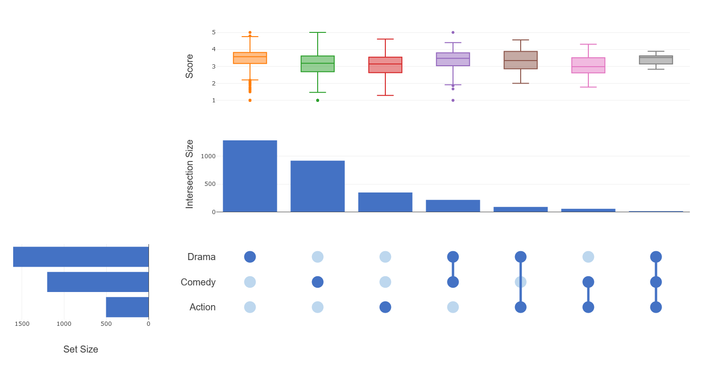
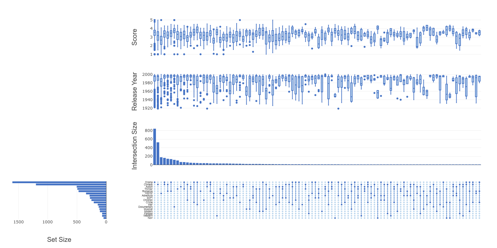

Visualizing and understanding relationships between sets plays an important role in analyzing data at hand. A widely used visualization method is the
Venn diagram. But Venn diagrams are limited in their capability. While two, three, or even four sets may be easily visualizable, they struggle
with higher set counts. To address this issue, the concept of UpSet plots was developed by Lex et al. in 2014. In this blogpost I will demonstrate how to visualize
sets with Venn diagrams and UpSet plots. I use a dataframe containing information about movies as source for our sets. The comparisons will be based on the genre of the movies.
Name Action Comedy Drama AvgRating
0 -> Toy Story (1995) False True False 4.15
2 -> Grumpier Old Men (1995) False True False 3.02
3 -> Waiting to Exhale (1995) False True True 2.73
4 -> Father of the Bride Part II (1995) False True False 3.01
5 -> Heat (1995) True False False 3.88
6 -> Sabrina (1995) False True False 3.41
8 -> Sudden Death (1995) True False False 2.66
9 -> GoldenEye (1995) True False False 3.54
10 -> American President, The (1995) False True True 3.79
11 -> Dracula: Dead and Loving It (1995) False True False 2.36
13 -> Nixon (1995) False False True 3.54
14 -> Cutthroat Island (1995) True False False 2.46
15 -> Casino (1995) False False True 3.79
16 -> Sense and Sensibility (1995) False False True 4.03
18 -> Ace Ventura: When Nature Calls (1995) False True False 2.48
: ... ... ... ... ...
3851 -> Beach Party (1963) False True False 2.64
3852 -> Bikini Beach (1964) False True False 2.59
3854 -> Pajama Party (1964) False True False 2.92
3855 -> Stranger Than Paradise (1984) False True False 3.85
3858 -> Abbott and Costello Meet Frankenstein (1948) False True False 3.44
3859 -> Bank Dick, The (1940) False True False 3.99
3866 -> Phantom of the Opera, The (1943) False False True 3.72
3873 -> Bamboozled (2000) False True False 3.05
3874 -> Bootmen (2000) False True True 2.11
3876 -> Get Carter (2000) True False True 2.26
3878 -> Meet the Parents (2000) False True False 3.64
3879 -> Requiem for a Dream (2000) False False True 4.12
3880 -> Tigerland (2000) False False True 3.67
3881 -> Two Family House (2000) False False True 3.9
3882 -> Contender, The (2000) False False True 3.78
|
A Venn diagram uses simple closed shapes to represent sets. Those shapes are often circles or ellipses.
Let`s start with a simple comparison of two sets using circles as our shape. For that we take genres action and comedy and determine their intersections:
let actionSet =
movieFrame
|> getSetByGenre "Action"
let comedySet =
movieFrame
|> getSetByGenre "Comedy"
let intersectionCount =
Venn.ofSetList [|"Action";"Comedy"|] [|actionSet;comedySet|]
|> Venn.toVennCount
map [("Action", 438); ("Action&Comedy", 65); ("Comedy", 1135); ("union", 1638)]
|
Now we can start building our Venn diagram with Plotly. First of all we need to create two shapes for the circles at the correct position and put them in a layout.
let axis =
LinearAxis.init(
ShowTickLabels = false,
ShowGrid = false,
ZeroLine = false
)
let circleAction =
Shape.init(
Opacity = 0.3,
Xref = "x",
Yref = "y",
Fillcolor = Color.fromKeyword Red,
X0 = 0,
Y0 = 0,
X1 = 2,
Y1 = 2,
ShapeType = StyleParam.ShapeType.Circle,
Line = Line.init(Color = Color.fromKeyword Red)
)
let circleComedy =
Shape.init(
Opacity = 0.3,
Xref = "x",
Yref = "y",
Fillcolor = Color.fromKeyword Blue,
X0 = 1.5,
Y0 = 0,
X1 = 3.5,
Y1 = 2,
ShapeType = StyleParam.ShapeType.Circle,
Line = Line.init(Color = Color.fromKeyword Blue)
)
let layout =
Layout.init(
Shapes = [circleAction;circleComedy],
Margin =
Margin.init(
Left = 20,
Right = 20,
Bottom = 100
)
)
|> Layout.updateLinearAxisById(StyleParam.SubPlotId.XAxis 1, axis)
|> Layout.updateLinearAxisById(StyleParam.SubPlotId.YAxis 1, axis)
Next, we need some text to describe our sets and intersection counts. This can be achieved via Chart.Scatter.
let vennChart =
Trace2D.initScatter(
Trace2DStyle.Scatter(
X = [|1.; 2.5; 1.75|],
Y = [|1.; 1.; 1.|],
Mode = StyleParam.Mode.Text,
MultiText = ["Action<br>438";"Comedy<br>1135";"65"],
TextFont =
Font.init (
Family = StyleParam.FontFamily.Arial,
Size = 18.,
Color = Color.fromString "black"
)
)
)
|> GenericChart.ofTraceObject true
|> Chart.withSize (400.,400.)
We can now complete our Venn diagram by adding our previously created layout to the Chart.Scatter
vennChart
|> Chart.withLayout layout
This required a lot of manual formatting. Luckily, BioFSharp.Vis contains chart extensions
for Venn diagrams with two and three sets.
let dramaSet =
movieFrame
|> getSetByGenre "Drama"
Chart.Venn (
[|"Action";"Comedy";"Drama"|],
[|actionSet;comedySet;dramaSet|]
)
Since Venn diagrams with more than three sets are increasingly difficult to model and read, BioFSharp.Vis also includes UpSet plots.
UpSet plots consist of three basic parts. The first is a matrix representing the intersection between sets. Each row corresponds to a set and each column to
an intersection. Sets taht are part of that particular intersection are marked with a filled in dot and connected by a line. We can try to create the
intersection matrix for the three sets used in the previous Venn diagramm. We start again by computing the intersections.
let intersections = Venn.ofSetList [|"Action";"Comedy";"Drama"|] [|actionSet;comedySet;dramaSet|]
Now we need the sets that are part of each intersection. We also need a row position for each set in the matrix.
let intersectingSets =
intersections
|> Map.toArray
|> Array.map (snd >> (fun v -> v.Label))
|> Array.filter (List.isEmpty >> not)
No value returned by any evaluator
|
let setPositions =
[|
"Action", 0
"Comedy", 1
"Drama" , 2
|]
With this information we can create the first column of the intersection matrix:
let createIntersectionMatrixPart (setPos: (string*int)[]) (iSet: string list) (position: int) =
// Creates the part of the intersection matrix representing the current intersection.
// The position on the y-Axis is based on the order the labels and sets are given in.
// The position on the x-Axis is based on the given position (determined by intersection size).
UpSetParts.createIntersectionPlotPart
position
iSet
setPos
25
(Color.fromKeyword DarkBlue)
(Color.fromKeyword LightBlue)
let intersectionMatrixPart =
createIntersectionMatrixPart
setPositions
intersectingSets.[0]
0
intersectionMatrixPart
|> Chart.show
We can apply this function now to all intersections and add the correct labels to the rows:
let intersectionMatrix =
intersectingSets
|> Array.mapi (fun i iS ->
createIntersectionMatrixPart
setPositions
iS
i
)
|> Chart.combine
// Axis styling
|> Chart.withYAxis (
LinearAxis.init(
ShowGrid=false,
ShowLine=false,
ShowTickLabels=true,
ZeroLine=false,
TickMode=StyleParam.TickMode.Array,
TickVals=[0 .. setPositions.Length - 1],
TickText=(setPositions |> Array.map fst)
)
)
|> Chart.withXAxis (
LinearAxis.init(
ShowGrid=false,
ShowLine=false,
ShowTickLabels=false,
ZeroLine=false,
Domain=StyleParam.Range.MinMax (0.4,1.)
)
)
|> Chart.withLegend false
The next part is a bar chart representing the size of each set. The bar for each set gets placed next to the row representing the set in the matrix.
let setSizeBar =
// Creates a bar chart with the set sizes
UpSetParts.createSetSizePlot
(setPositions |> Array.map fst)
[|actionSet;comedySet;dramaSet|]
2.5
(Color.fromKeyword DarkBlue)
(0.,0.3)
(Font.init(StyleParam.FontFamily.Arial, Size=20.))
[
setSizeBar
intersectionMatrix
]
|> Chart.Grid (1,2)
|> Chart.withSize (900.,600.)
Lastly we come to our third basic part. It is a bar chart representing the size of each intersection, which it placed atop of the column representing each intersection.
let intersectionCounts =
intersections
|> Map.toArray
|> Array.map (fun (_,labelSet) ->
labelSet.Label, labelSet.Set.Count
)
|> Array.filter (fun (id,_) -> not id.IsEmpty)
let intersectionSizeBar =
// Creates a bar chart with the intersection sizes
UpSetParts.createIntersectionSizePlots
intersectionCounts
(float intersectionCounts.Length - 0.5)
(Color.fromKeyword DarkBlue)
(0.4, 1.)
(Font.init(StyleParam.FontFamily.Arial, Size=20.))
[|
Chart.Invisible()
intersectionSizeBar
setSizeBar
intersectionMatrix
|]
|> Chart.Grid(2,2)
|> Chart.withSize (900.,600.)
We now have a basic UpSet plot. There is also a chart extension for UpSet plot in BioFSharp.Vis.
Chart.UpSet(
[|"Action";"Comedy";"Drama"|],
[|actionSet;comedySet;dramaSet|]
)
|> Chart.withSize (1400, 800)
|> Chart.withTemplate ChartTemplates.light
The UpSet plot can be augmented by different charts representing features of the intersections. We just need a map connecting set elements to the
feature and a charting function with a title
Chart.UpSet(
[|"Action";"Comedy";"Drama"|],
[|actionSet;comedySet;dramaSet|],
[|(getScoreMap movieFrame)|],
[|(fun y -> Chart.BoxPlot(Y = y)),"Score"|]
)
|> Chart.withSize (1400., 800.)
|> Chart.withTemplate ChartTemplates.light

We can theoretically plot multiple different features with individual charts for our intersections. We also are not as limited in the number of sets as we are with
Venn diagrams.Even though the UpSet plot gets also more complex with increasing number of sets, it less extreme than with a Venn diagram. Here is a small example:

namespace Deedle
namespace Plotly
namespace Plotly.NET
namespace Plotly.NET.LayoutObjects
Multiple items
namespace FSharp
--------------------
namespace Microsoft.FSharp
namespace FSharp.Stats
namespace BioFSharp
namespace BioFSharp.Vis
module UpSet
from BioFSharp.Vis
module Venn
from BioFSharp.Vis
namespace System
namespace System.IO
namespace Deedle.Internal
type IFsiFormattable =
abstract member Format : unit -> string
val movieFrame : Frame<int,string>
Multiple items
module Frame
from Deedle
--------------------
type Frame =
inherit DynamicObj
new : unit -> Frame
--------------------
type Frame<'TRowKey,'TColumnKey (requires equality and equality)> =
interface IDynamicMetaObjectProvider
interface INotifyCollectionChanged
interface IFsiFormattable
interface IFrame
new : rowIndex:IIndex<'TRowKey> * columnIndex:IIndex<'TColumnKey> * data:IVector<IVector> * indexBuilder:IIndexBuilder * vectorBuilder:IVectorBuilder -> Frame<'TRowKey,'TColumnKey> + 1 overload
member AddColumn : column:'TColumnKey * series:seq<'V> -> unit + 3 overloads
member AggregateRowsBy : groupBy:seq<'TColumnKey> * aggBy:seq<'TColumnKey> * aggFunc:Func<Series<'TRowKey,'a>,'b> -> Frame<int,'TColumnKey>
member Clone : unit -> Frame<'TRowKey,'TColumnKey>
member ColumnApply : f:Func<Series<'TRowKey,'T>,ISeries<'TRowKey>> -> Frame<'TRowKey,'TColumnKey> + 1 overload
member DropColumn : column:'TColumnKey -> unit
...
--------------------
new : unit -> Frame
--------------------
new : names:seq<'TColumnKey> * columns:seq<ISeries<'TRowKey>> -> Frame<'TRowKey,'TColumnKey>
new : rowIndex:Indices.IIndex<'TRowKey> * columnIndex:Indices.IIndex<'TColumnKey> * data:IVector<IVector> * indexBuilder:Indices.IIndexBuilder * vectorBuilder:Vectors.IVectorBuilder -> Frame<'TRowKey,'TColumnKey>
static member Frame.ReadCsv : path:string * ?hasHeaders:bool * ?inferTypes:bool * ?inferRows:int * ?schema:string * ?separators:string * ?culture:string * ?maxRows:int * ?missingValues:string [] * ?preferOptions:bool -> Frame<int,string>
static member Frame.ReadCsv : stream:Stream * ?hasHeaders:bool * ?inferTypes:bool * ?inferRows:int * ?schema:string * ?separators:string * ?culture:string * ?maxRows:int * ?missingValues:string [] * ?preferOptions:bool -> Frame<int,string>
static member Frame.ReadCsv : reader:TextReader * ?hasHeaders:bool * ?inferTypes:bool * ?inferRows:int * ?schema:string * ?separators:string * ?culture:string * ?maxRows:int * ?missingValues:string [] * ?preferOptions:bool -> Frame<int,string>
static member Frame.ReadCsv : stream:Stream * hasHeaders:Nullable<bool> * inferTypes:Nullable<bool> * inferRows:Nullable<int> * schema:string * separators:string * culture:string * maxRows:Nullable<int> * missingValues:string [] * preferOptions:Nullable<bool> -> Frame<int,string>
static member Frame.ReadCsv : location:string * hasHeaders:Nullable<bool> * inferTypes:Nullable<bool> * inferRows:Nullable<int> * schema:string * separators:string * culture:string * maxRows:Nullable<int> * missingValues:string [] * preferOptions:bool -> Frame<int,string>
static member Frame.ReadCsv : path:string * indexCol:string * ?hasHeaders:bool * ?inferTypes:bool * ?inferRows:int * ?schema:string * ?separators:string * ?culture:string * ?maxRows:int * ?missingValues:string [] * ?preferOptions:bool -> Frame<'R,string> (requires equality)
type Path =
static member ChangeExtension : path: string * extension: string -> string
static member Combine : path1: string * path2: string -> string + 3 overloads
static member EndsInDirectorySeparator : path: ReadOnlySpan<char> -> bool + 1 overload
static member GetDirectoryName : path: ReadOnlySpan<char> -> ReadOnlySpan<char> + 1 overload
static member GetExtension : path: ReadOnlySpan<char> -> ReadOnlySpan<char> + 1 overload
static member GetFileName : path: ReadOnlySpan<char> -> ReadOnlySpan<char> + 1 overload
static member GetFileNameWithoutExtension : path: ReadOnlySpan<char> -> ReadOnlySpan<char> + 1 overload
static member GetFullPath : path: string -> string + 1 overload
static member GetInvalidFileNameChars : unit -> char []
static member GetInvalidPathChars : unit -> char []
...
<summary>Performs operations on <see cref="T:System.String" /> instances that contain file or directory path information. These operations are performed in a cross-platform manner.</summary>
Path.Combine([<ParamArray>] paths: string []) : string
Path.Combine(path1: string, path2: string) : string
Path.Combine(path1: string, path2: string, path3: string) : string
Path.Combine(path1: string, path2: string, path3: string, path4: string) : string
val sliceCols : columns:seq<'C> -> frame:Frame<'R,'C> -> Frame<'R,'C> (requires equality and equality)
val filterRows : f:('R -> ObjectSeries<'C> -> bool) -> frame:Frame<'R,'C> -> Frame<'R,'C> (requires equality and equality)
val k : int
val s : ObjectSeries<string>
member ObjectSeries.GetAs : column:'K -> 'R
member ObjectSeries.GetAs : column:'K * fallback:'R -> 'R
[<Struct>]
type bool = Boolean
<summary>An abbreviation for the CLI type <see cref="T:System.Boolean" />.</summary>
<category>Basic Types</category>
val getSetByGenre : category:string -> frame:Frame<int,string> -> Set<string>
val category : string
Multiple items
val string : value:'T -> string
<summary>Converts the argument to a string using <c>ToString</c>.</summary>
<remarks>For standard integer and floating point values the and any type that implements <c>IFormattable</c><c>ToString</c> conversion uses <c>CultureInfo.InvariantCulture</c>. </remarks>
<param name="value">The input value.</param>
<returns>The converted string.</returns>
--------------------
type string = String
<summary>An abbreviation for the CLI type <see cref="T:System.String" />.</summary>
<category>Basic Types</category>
val frame : Frame<int,string>
Multiple items
val int : value:'T -> int (requires member op_Explicit)
<summary>Converts the argument to signed 32-bit integer. This is a direct conversion for all
primitive numeric types. For strings, the input is converted using <c>Int32.Parse()</c>
with InvariantCulture settings. Otherwise the operation requires an appropriate
static conversion method on the input type.</summary>
<param name="value">The input value.</param>
<returns>The converted int</returns>
--------------------
[<Struct>]
type int = int32
<summary>An abbreviation for the CLI type <see cref="T:System.Int32" />.</summary>
<category>Basic Types</category>
--------------------
type int<'Measure> =
int
<summary>The type of 32-bit signed integer numbers, annotated with a unit of measure. The unit
of measure is erased in compiled code and when values of this type
are analyzed using reflection. The type is representationally equivalent to
<see cref="T:System.Int32" />.</summary>
<category>Basic Types with Units of Measure</category>
val indexRowsUsing : f:(ObjectSeries<'C> -> 'R2) -> frame:Frame<'R1,'C> -> Frame<'R2,'C> (requires equality and equality and equality)
val f : Frame<{| Genre: bool; Name: string |},string>
property Frame.RowKeys: seq<{| Genre: bool; Name: string |}> with get
Multiple items
module Seq
from FSharp.Stats
<summary>
Module to compute common statistical measure
</summary>
--------------------
module Seq
from Microsoft.FSharp.Collections
<summary>Contains operations for working with values of type <see cref="T:Microsoft.FSharp.Collections.seq`1" />.</summary>
val toArray : source:seq<'T> -> 'T []
<summary>Builds an array from the given collection.</summary>
<param name="source">The input sequence.</param>
<returns>The result array.</returns>
<exception cref="T:System.ArgumentNullException">Thrown when the input sequence is null.</exception>
type Array =
interface ICollection
interface IEnumerable
interface IList
interface IStructuralComparable
interface IStructuralEquatable
interface ICloneable
new : unit -> unit
member Clone : unit -> obj
member CopyTo : array: Array * index: int -> unit + 1 overload
member GetEnumerator : unit -> IEnumerator
...
<summary>Provides methods for creating, manipulating, searching, and sorting arrays, thereby serving as the base class for all arrays in the common language runtime.</summary>
val filter : predicate:('T -> bool) -> array:'T [] -> 'T []
<summary>Returns a new collection containing only the elements of the collection
for which the given predicate returns "true".</summary>
<param name="predicate">The function to test the input elements.</param>
<param name="array">The input array.</param>
<returns>An array containing the elements for which the given predicate returns true.</returns>
<exception cref="T:System.ArgumentNullException">Thrown when the input array is null.</exception>
val x : {| Genre: bool; Name: string |}
anonymous record field Genre: bool
val map : mapping:('T -> 'U) -> array:'T [] -> 'U []
<summary>Builds a new array whose elements are the results of applying the given function
to each of the elements of the array.</summary>
<param name="mapping">The function to transform elements of the array.</param>
<param name="array">The input array.</param>
<returns>The array of transformed elements.</returns>
<exception cref="T:System.ArgumentNullException">Thrown when the input array is null.</exception>
anonymous record field Name: string
Multiple items
module Set
from Microsoft.FSharp.Collections
<summary>Contains operations for working with values of type <see cref="T:Microsoft.FSharp.Collections.Set`1" />.</summary>
--------------------
type Set<'T (requires comparison)> =
interface IReadOnlyCollection<'T>
interface IComparable
interface IEnumerable
interface IEnumerable<'T>
interface ICollection<'T>
new : elements:seq<'T> -> Set<'T>
member Add : value:'T -> Set<'T>
member Contains : value:'T -> bool
override Equals : obj -> bool
member IsProperSubsetOf : otherSet:Set<'T> -> bool
...
<summary>Immutable sets based on binary trees, where elements are ordered by F# generic comparison. By default
comparison is the F# structural comparison function or uses implementations of the IComparable interface on element values.</summary>
<remarks>See the <see cref="T:Microsoft.FSharp.Collections.SetModule" /> module for further operations on sets.
All members of this class are thread-safe and may be used concurrently from multiple threads.</remarks>
--------------------
new : elements:seq<'T> -> Set<'T>
val ofArray : array:'T [] -> Set<'T> (requires comparison)
<summary>Builds a set that contains the same elements as the given array.</summary>
<param name="array">The input array.</param>
<returns>A set containing the elements of <c>array</c>.</returns>
val getScoreMap : frame:Frame<int,string> -> Map<string,float>
Multiple items
val float : value:'T -> float (requires member op_Explicit)
<summary>Converts the argument to 64-bit float. This is a direct conversion for all
primitive numeric types. For strings, the input is converted using <c>Double.Parse()</c>
with InvariantCulture settings. Otherwise the operation requires an appropriate
static conversion method on the input type.</summary>
<param name="value">The input value.</param>
<returns>The converted float</returns>
--------------------
[<Struct>]
type float = Double
<summary>An abbreviation for the CLI type <see cref="T:System.Double" />.</summary>
<category>Basic Types</category>
--------------------
type float<'Measure> =
float
<summary>The type of double-precision floating point numbers, annotated with a unit of measure.
The unit of measure is erased in compiled code and when values of this type
are analyzed using reflection. The type is representationally equivalent to
<see cref="T:System.Double" />.</summary>
<category index="6">Basic Types with Units of Measure</category>
val f : Frame<(string * float),string>
property Frame.RowKeys: seq<string * float> with get
Multiple items
module Map
from Microsoft.FSharp.Collections
<summary>Contains operations for working with values of type <see cref="T:Microsoft.FSharp.Collections.Map`2" />.</summary>
--------------------
type Map<'Key,'Value (requires comparison)> =
interface IReadOnlyDictionary<'Key,'Value>
interface IReadOnlyCollection<KeyValuePair<'Key,'Value>>
interface IEnumerable
interface IComparable
interface IEnumerable<KeyValuePair<'Key,'Value>>
interface ICollection<KeyValuePair<'Key,'Value>>
interface IDictionary<'Key,'Value>
new : elements:seq<'Key * 'Value> -> Map<'Key,'Value>
member Add : key:'Key * value:'Value -> Map<'Key,'Value>
member Change : key:'Key * f:('Value option -> 'Value option) -> Map<'Key,'Value>
...
<summary>Immutable maps based on binary trees, where keys are ordered by F# generic comparison. By default
comparison is the F# structural comparison function or uses implementations of the IComparable interface on key values.</summary>
<remarks>See the <see cref="T:Microsoft.FSharp.Collections.MapModule" /> module for further operations on maps.
All members of this class are thread-safe and may be used concurrently from multiple threads.</remarks>
--------------------
new : elements:seq<'Key * 'Value> -> Map<'Key,'Value>
val ofSeq : elements:seq<'Key * 'T> -> Map<'Key,'T> (requires comparison)
<summary>Returns a new map made from the given bindings.</summary>
<param name="elements">The input sequence of key/value pairs.</param>
<returns>The resulting map.</returns>
val actionSet : Set<string>
val comedySet : Set<string>
val intersectionCount : Map<string,int>
val ofSetList : labels:string array -> sets:Set<'c> array -> Map<string,VennSet<string,'c>> (requires comparison)
<summary>
Generates a generic venn from a list of sets
</summary>
val toVennCount : genericVenn:GenericVenn<'a,'b> -> Map<string,int> (requires comparison)
<summary>
Converts a generic venn to the count venn
</summary>
val axis : LinearAxis
Multiple items
type LinearAxis =
inherit DynamicObj
new : unit -> LinearAxis
static member init : ?Visible:bool * ?Color:Color * ?Title:Title * ?AxisType:AxisType * ?AutoTypeNumbers:AutoTypeNumbers * ?AutoRange:AutoRange * ?RangeMode:RangeMode * ?Range:Range * ?FixedRange:bool * ?ScaleAnchor:LinearAxisId * ?ScaleRatio:float * ?Constrain:AxisConstraint * ?ConstrainToward:AxisConstraintDirection * ?Matches:LinearAxisId * ?Rangebreaks:seq<Rangebreak> * ?TickMode:TickMode * ?NTicks:int * ?Tick0:#IConvertible * ?DTick:#IConvertible * ?TickVals:seq<#IConvertible> * ?TickText:seq<#IConvertible> * ?Ticks:TickOptions * ?TicksOn:CategoryTickAnchor * ?TickLabelMode:TickLabelMode * ?TickLabelPosition:TickLabelPosition * ?TickLabelOverflow:TickLabelOverflow * ?Mirror:Mirror * ?TickLen:int * ?TickWidth:int * ?TickColor:Color * ?ShowTickLabels:bool * ?AutoMargin:bool * ?ShowSpikes:bool * ?SpikeColor:Color * ?SpikeThickness:int * ?SpikeDash:DrawingStyle * ?SpikeMode:SpikeMode * ?SpikeSnap:SpikeSnap * ?TickFont:Font * ?TickAngle:int * ?ShowTickPrefix:ShowTickOption * ?TickPrefix:string * ?ShowTickSuffix:ShowTickOption * ?TickSuffix:string * ?ShowExponent:ShowExponent * ?ExponentFormat:ExponentFormat * ?MinExponent:float * ?SeparateThousands:bool * ?TickFormat:string * ?TickFormatStops:seq<TickFormatStop> * ?HoverFormat:string * ?ShowLine:bool * ?LineColor:Color * ?LineWidth:float * ?ShowGrid:bool * ?GridColor:Color * ?GridWidth:float * ?ZeroLine:bool * ?ZeroLineColor:Color * ?ZeroLineWidth:float * ?ShowDividers:bool * ?DividerColor:Color * ?DividerWidth:int * ?Anchor:LinearAxisId * ?Side:Side * ?Overlaying:LinearAxisId * ?Layer:Layer * ?Domain:Range * ?Position:float * ?CategoryOrder:CategoryOrder * ?CategoryArray:seq<#IConvertible> * ?UIRevision:#IConvertible * ?RangeSlider:RangeSlider * ?RangeSelector:RangeSelector * ?Calendar:Calendar * ?BackgroundColor:Color * ?ShowBackground:bool -> LinearAxis
static member initCarpet : ?Color:Color * ?Title:Title * ?AxisType:AxisType * ?AutoTypeNumbers:AutoTypeNumbers * ?AutoRange:AutoRange * ?RangeMode:RangeMode * ?Range:Range * ?FixedRange:bool * ?TickMode:TickMode * ?NTicks:int * ?Tick0:#IConvertible * ?DTick:#IConvertible * ?TickVals:seq<#IConvertible> * ?TickText:seq<#IConvertible> * ?Ticks:TickOptions * ?ShowTickLabels:bool * ?TickFont:Font * ?TickAngle:int * ?ShowTickPrefix:ShowTickOption * ?TickPrefix:string * ?ShowTickSuffix:ShowTickOption * ?TickSuffix:string * ?ShowExponent:ShowExponent * ?ExponentFormat:ExponentFormat * ?MinExponent:float * ?SeparateThousands:bool * ?TickFormat:string * ?TickFormatStops:seq<TickFormatStop> * ?ShowLine:bool * ?LineColor:Color * ?LineWidth:float * ?ShowGrid:bool * ?GridColor:Color * ?GridWidth:float * ?CategoryOrder:CategoryOrder * ?CategoryArray:seq<#IConvertible> * ?ArrayDTick:int * ?ArrayTick0:int * ?CheaterType:CheaterType * ?EndLine:bool * ?EndLineColor:Color * ?EndLineWidth:int * ?LabelPadding:int * ?LabelPrefix:string * ?LabelSuffix:string * ?MinorGridColor:Color * ?MinorGridCount:int * ?MinorGridWidth:int * ?Smoothing:float * ?StartLine:bool * ?StartLineColor:Color * ?StartLineWidth:int -> LinearAxis
static member initCategorical : categoryOrder:CategoryOrder * ?Visible:bool * ?Color:Color * ?Title:Title * ?AutoTypeNumbers:AutoTypeNumbers * ?AutoRange:AutoRange * ?RangeMode:RangeMode * ?Range:Range * ?FixedRange:bool * ?ScaleAnchor:LinearAxisId * ?ScaleRatio:float * ?Constrain:AxisConstraint * ?ConstrainToward:AxisConstraintDirection * ?Matches:LinearAxisId * ?Rangebreaks:seq<Rangebreak> * ?TickMode:TickMode * ?NTicks:int * ?Tick0:#IConvertible * ?DTick:#IConvertible * ?TickVals:seq<#IConvertible> * ?TickText:seq<#IConvertible> * ?Ticks:TickOptions * ?TicksOn:CategoryTickAnchor * ?TickLabelMode:TickLabelMode * ?TickLabelPosition:TickLabelPosition * ?TickLabelOverflow:TickLabelOverflow * ?Mirror:Mirror * ?TickLen:int * ?TickWidth:int * ?TickColor:Color * ?ShowTickLabels:bool * ?AutoMargin:bool * ?ShowSpikes:bool * ?SpikeColor:Color * ?SpikeThickness:int * ?SpikeDash:DrawingStyle * ?SpikeMode:SpikeMode * ?SpikeSnap:SpikeSnap * ?TickFont:Font * ?TickAngle:int * ?ShowTickPrefix:ShowTickOption * ?TickPrefix:string * ?ShowTickSuffix:ShowTickOption * ?TickSuffix:string * ?ShowExponent:ShowExponent * ?ExponentFormat:ExponentFormat * ?MinExponent:float * ?SeparateThousands:bool * ?TickFormat:string * ?TickFormatStops:seq<TickFormatStop> * ?HoverFormat:string * ?ShowLine:bool * ?LineColor:Color * ?LineWidth:float * ?ShowGrid:bool * ?GridColor:Color * ?GridWidth:float * ?ZeroLine:bool * ?ZeroLineColor:Color * ?ZeroLineWidth:float * ?ShowDividers:bool * ?DividerColor:Color * ?DividerWidth:int * ?Anchor:LinearAxisId * ?Side:Side * ?Overlaying:LinearAxisId * ?Layer:Layer * ?Domain:Range * ?Position:float * ?CategoryArray:seq<#IConvertible> * ?UIRevision:#IConvertible * ?RangeSlider:RangeSlider * ?RangeSelector:RangeSelector * ?Calendar:Calendar -> LinearAxis
static member initIndicatorGauge : ?DTick:#IConvertible * ?ExponentFormat:ExponentFormat * ?MinExponent:float * ?NTicks:int * ?Range:Range * ?SeparateThousands:bool * ?ShowExponent:ShowExponent * ?ShowTickLabels:bool * ?ShowTickPrefix:ShowTickOption * ?ShowTickSuffix:ShowTickOption * ?Tick0:#IConvertible * ?TickAngle:int * ?TickColor:Color * ?TickFont:Font * ?TickFormat:string * ?TickFormatStops:seq<TickFormatStop> * ?TickLen:int * ?TickMode:TickMode * ?TickPrefix:string * ?Ticks:TickOptions * ?TickSuffix:string * ?TickText:seq<#IConvertible> * ?TickVals:seq<#IConvertible> * ?TickWidth:int * ?Visible:bool -> LinearAxis
static member style : ?Visible:bool * ?Color:Color * ?Title:Title * ?AxisType:AxisType * ?AutoTypeNumbers:AutoTypeNumbers * ?AutoRange:AutoRange * ?RangeMode:RangeMode * ?Range:Range * ?FixedRange:bool * ?ScaleAnchor:LinearAxisId * ?ScaleRatio:float * ?Constrain:AxisConstraint * ?ConstrainToward:AxisConstraintDirection * ?Matches:LinearAxisId * ?Rangebreaks:seq<Rangebreak> * ?TickMode:TickMode * ?NTicks:int * ?Tick0:#IConvertible * ?DTick:#IConvertible * ?TickVals:seq<#IConvertible> * ?TickText:seq<#IConvertible> * ?Ticks:TickOptions * ?TicksOn:CategoryTickAnchor * ?TickLabelMode:TickLabelMode * ?TickLabelPosition:TickLabelPosition * ?TickLabelOverflow:TickLabelOverflow * ?Mirror:Mirror * ?TickLen:int * ?TickWidth:int * ?TickColor:Color * ?ShowTickLabels:bool * ?AutoMargin:bool * ?ShowSpikes:bool * ?SpikeColor:Color * ?SpikeThickness:int * ?SpikeDash:DrawingStyle * ?SpikeMode:SpikeMode * ?SpikeSnap:SpikeSnap * ?TickFont:Font * ?TickAngle:int * ?ShowTickPrefix:ShowTickOption * ?TickPrefix:string * ?ShowTickSuffix:ShowTickOption * ?TickSuffix:string * ?ShowExponent:ShowExponent * ?ExponentFormat:ExponentFormat * ?MinExponent:float * ?SeparateThousands:bool * ?TickFormat:string * ?TickFormatStops:seq<TickFormatStop> * ?HoverFormat:string * ?ShowLine:bool * ?LineColor:Color * ?LineWidth:float * ?ShowGrid:bool * ?GridColor:Color * ?GridWidth:float * ?ZeroLine:bool * ?ZeroLineColor:Color * ?ZeroLineWidth:float * ?ShowDividers:bool * ?DividerColor:Color * ?DividerWidth:int * ?Anchor:LinearAxisId * ?Side:Side * ?Overlaying:LinearAxisId * ?Layer:Layer * ?Domain:Range * ?Position:float * ?CategoryOrder:CategoryOrder * ?CategoryArray:seq<#IConvertible> * ?UIRevision:#IConvertible * ?RangeSlider:RangeSlider * ?RangeSelector:RangeSelector * ?Calendar:Calendar * ?ArrayDTick:int * ?ArrayTick0:int * ?CheaterType:CheaterType * ?EndLine:bool * ?EndLineColor:Color * ?EndLineWidth:int * ?LabelPadding:int * ?LabelPrefix:string * ?LabelSuffix:string * ?MinorGridColor:Color * ?MinorGridCount:int * ?MinorGridWidth:int * ?Smoothing:float * ?StartLine:bool * ?StartLineColor:Color * ?StartLineWidth:int * ?BackgroundColor:Color * ?ShowBackground:bool -> (LinearAxis -> LinearAxis)
<summary>Linear axes can be used as x and y scales on 2D plots, and as x,y, and z scales on 3D plots.</summary>
--------------------
new : unit -> LinearAxis
static member LinearAxis.init : ?Visible:bool * ?Color:Color * ?Title:Title * ?AxisType:StyleParam.AxisType * ?AutoTypeNumbers:StyleParam.AutoTypeNumbers * ?AutoRange:StyleParam.AutoRange * ?RangeMode:StyleParam.RangeMode * ?Range:StyleParam.Range * ?FixedRange:bool * ?ScaleAnchor:StyleParam.LinearAxisId * ?ScaleRatio:float * ?Constrain:StyleParam.AxisConstraint * ?ConstrainToward:StyleParam.AxisConstraintDirection * ?Matches:StyleParam.LinearAxisId * ?Rangebreaks:seq<Rangebreak> * ?TickMode:StyleParam.TickMode * ?NTicks:int * ?Tick0:#IConvertible * ?DTick:#IConvertible * ?TickVals:seq<#IConvertible> * ?TickText:seq<#IConvertible> * ?Ticks:StyleParam.TickOptions * ?TicksOn:StyleParam.CategoryTickAnchor * ?TickLabelMode:StyleParam.TickLabelMode * ?TickLabelPosition:StyleParam.TickLabelPosition * ?TickLabelOverflow:StyleParam.TickLabelOverflow * ?Mirror:StyleParam.Mirror * ?TickLen:int * ?TickWidth:int * ?TickColor:Color * ?ShowTickLabels:bool * ?AutoMargin:bool * ?ShowSpikes:bool * ?SpikeColor:Color * ?SpikeThickness:int * ?SpikeDash:StyleParam.DrawingStyle * ?SpikeMode:StyleParam.SpikeMode * ?SpikeSnap:StyleParam.SpikeSnap * ?TickFont:Font * ?TickAngle:int * ?ShowTickPrefix:StyleParam.ShowTickOption * ?TickPrefix:string * ?ShowTickSuffix:StyleParam.ShowTickOption * ?TickSuffix:string * ?ShowExponent:StyleParam.ShowExponent * ?ExponentFormat:StyleParam.ExponentFormat * ?MinExponent:float * ?SeparateThousands:bool * ?TickFormat:string * ?TickFormatStops:seq<TickFormatStop> * ?HoverFormat:string * ?ShowLine:bool * ?LineColor:Color * ?LineWidth:float * ?ShowGrid:bool * ?GridColor:Color * ?GridWidth:float * ?ZeroLine:bool * ?ZeroLineColor:Color * ?ZeroLineWidth:float * ?ShowDividers:bool * ?DividerColor:Color * ?DividerWidth:int * ?Anchor:StyleParam.LinearAxisId * ?Side:StyleParam.Side * ?Overlaying:StyleParam.LinearAxisId * ?Layer:StyleParam.Layer * ?Domain:StyleParam.Range * ?Position:float * ?CategoryOrder:StyleParam.CategoryOrder * ?CategoryArray:seq<#IConvertible> * ?UIRevision:#IConvertible * ?RangeSlider:RangeSlider * ?RangeSelector:RangeSelector * ?Calendar:StyleParam.Calendar * ?BackgroundColor:Color * ?ShowBackground:bool -> LinearAxis
val circleAction : Shape
Multiple items
type Shape =
inherit DynamicObj
new : unit -> Shape
static member init : ?ShapeType:ShapeType * ?X0:#IConvertible * ?X1:#IConvertible * ?Y0:#IConvertible * ?Y1:#IConvertible * ?Path:string * ?Opacity:float * ?Line:Line * ?Fillcolor:Color * ?Layer:Layer * ?Xref:string * ?Yref:string -> Shape
static member style : ?ShapeType:ShapeType * ?X0:#IConvertible * ?X1:#IConvertible * ?Y0:#IConvertible * ?Y1:#IConvertible * ?Path:string * ?Opacity:float * ?Line:Line * ?Fillcolor:Color * ?Layer:Layer * ?Xref:string * ?Yref:string -> (Shape -> Shape)
<summary>
Shape type inherits from dynamic object
</summary>
--------------------
new : unit -> Shape
static member Shape.init : ?ShapeType:StyleParam.ShapeType * ?X0:#IConvertible * ?X1:#IConvertible * ?Y0:#IConvertible * ?Y1:#IConvertible * ?Path:string * ?Opacity:float * ?Line:Line * ?Fillcolor:Color * ?Layer:StyleParam.Layer * ?Xref:string * ?Yref:string -> Shape
type Color =
private new : obj:obj -> Color
override Equals : other:obj -> bool
override GetHashCode : unit -> int
static member fromARGB : a:int -> r:int -> g:int -> b:int -> Color
static member fromColorScaleValues : c:seq<#IConvertible> -> Color
static member fromColors : c:seq<Color> -> Color
static member fromHex : s:string -> Color
static member fromKeyword : c:ColorKeyword -> Color
static member fromRGB : r:int -> g:int -> b:int -> Color
static member fromString : c:string -> Color
...
<summary>
Plotly color can be a single color, a sequence of colors, or a sequence of numeric values referencing the color of the colorscale obj
</summary>
static member Color.fromKeyword : c:ColorKeyword -> Color
union case ColorKeyword.Red: ColorKeyword
module StyleParam
from Plotly.NET
type ShapeType =
| Circle
| Rectangle
| SvgPath
| Line
member Convert : unit -> obj
override ToString : unit -> string
static member convert : (ShapeType -> obj)
static member toString : (ShapeType -> string)
<summary>
Specifies the shape type to be drawn. If "line", a line is drawn from (`x0`,`y0`) to (`x1`,`y1`) If "circle", a circle is drawn from ((`x0`+`x1`)/2, (`y0`+`y1`)/2))
with radius (|(`x0`+`x1`)/2 - `x0`|, |(`y0`+`y1`)/2 -`y0`)|) If "rect", a rectangle is drawn linking (`x0`,`y0`), (`x1`,`y0`), (`x1`,`y1`), (`x0`,`y1`), (`x0`,`y0`)
If "path", draw a custom SVG path using `path`.
</summary>
union case StyleParam.ShapeType.Circle: StyleParam.ShapeType
Multiple items
type Line =
inherit DynamicObj
new : unit -> Line
static member init : ?AutoColorScale:bool * ?CAuto:bool * ?CMax:float * ?CMid:float * ?CMin:float * ?Color:Color * ?ColorAxis:SubPlotId * ?Colorscale:Colorscale * ?ReverseScale:bool * ?ShowScale:bool * ?ColorBar:ColorBar * ?Dash:DrawingStyle * ?Shape:Shape * ?Simplify:bool * ?Smoothing:float * ?Width:float * ?MultiWidth:seq<float> * ?OutlierColor:Color * ?OutlierWidth:float -> Line
static member style : ?AutoColorScale:bool * ?CAuto:bool * ?CMax:float * ?CMid:float * ?CMin:float * ?Color:Color * ?ColorAxis:SubPlotId * ?Colorscale:Colorscale * ?ReverseScale:bool * ?ShowScale:bool * ?ColorBar:ColorBar * ?Dash:DrawingStyle * ?Shape:Shape * ?Simplify:bool * ?Smoothing:float * ?Width:float * ?MultiWidth:seq<float> * ?OutlierColor:Color * ?OutlierWidth:float -> (Line -> Line)
<summary>
The line object determines the style of the line in various aspect of plots such as a line connecting datums, outline of layout objects, etc..
</summary>
--------------------
new : unit -> Line
static member Line.init : ?AutoColorScale:bool * ?CAuto:bool * ?CMax:float * ?CMid:float * ?CMin:float * ?Color:Color * ?ColorAxis:StyleParam.SubPlotId * ?Colorscale:StyleParam.Colorscale * ?ReverseScale:bool * ?ShowScale:bool * ?ColorBar:ColorBar * ?Dash:StyleParam.DrawingStyle * ?Shape:StyleParam.Shape * ?Simplify:bool * ?Smoothing:float * ?Width:float * ?MultiWidth:seq<float> * ?OutlierColor:Color * ?OutlierWidth:float -> Line
val circleComedy : Shape
union case ColorKeyword.Blue: ColorKeyword
val layout : Layout
Multiple items
type Layout =
inherit DynamicObj
new : unit -> Layout
static member getColorAxisById : id:SubPlotId -> (Layout -> ColorAxis)
static member getGeoById : id:SubPlotId -> (Layout -> Geo)
static member getLayoutGrid : layout:Layout -> LayoutGrid
static member getLegend : layout:Layout -> Legend
static member getLinearAxisById : id:SubPlotId -> (Layout -> LinearAxis)
static member getMapboxById : id:SubPlotId -> (Layout -> Mapbox)
static member getPolarById : id:SubPlotId -> (Layout -> Polar)
static member getSceneById : id:SubPlotId -> (Layout -> Scene)
...
<summary>
A Layout object in the context of plotly charts contains all styling options that are not directly related to the visualization of the data itself, such as axes, legends, watermarks, etc.
</summary>
--------------------
new : unit -> Layout
static member Layout.init : ?Title:Title * ?ShowLegend:bool * ?Legend:Legend * ?Margin:Margin * ?AutoSize:bool * ?Width:int * ?Height:int * ?Font:Font * ?UniformText:UniformText * ?Separators:string * ?PaperBGColor:Color * ?PlotBGColor:Color * ?AutoTypeNumbers:StyleParam.AutoTypeNumbers * ?Colorscale:DefaultColorScales * ?Colorway:Color * ?ModeBar:ModeBar * ?HoverMode:StyleParam.HoverMode * ?ClickMode:StyleParam.ClickMode * ?DragMode:StyleParam.DragMode * ?SelectDirection:StyleParam.SelectDirection * ?HoverDistance:int * ?SpikeDistance:int * ?Hoverlabel:Hoverlabel * ?Transition:Transition * ?DataRevision:string * ?UIRevision:string * ?EditRevision:string * ?SelectRevision:string * ?Template:DynamicObj.DynamicObj * ?Meta:string * ?Computed:string * ?Grid:LayoutGrid * ?Calendar:StyleParam.Calendar * ?NewShape:Shape * ?ActiveShape:ActiveShape * ?HideSources:bool * ?BarGap:float * ?BarGroupGap:float * ?BarMode:StyleParam.BarMode * ?BarNorm:StyleParam.BarNorm * ?ExtendPieColors:bool * ?HiddenLabels:seq<#IConvertible> * ?PieColorWay:Color * ?BoxGap:float * ?BoxGroupGap:float * ?BoxMode:StyleParam.BoxMode * ?ViolinGap:float * ?ViolinGroupGap:float * ?ViolinMode:StyleParam.ViolinMode * ?WaterfallGap:float * ?WaterfallGroupGap:float * ?WaterfallMode:StyleParam.WaterfallMode * ?FunnelGap:float * ?FunnelGroupGap:float * ?FunnelMode:StyleParam.FunnelMode * ?ExtendFunnelAreaColors:bool * ?FunnelAreaColorWay:Color * ?ExtendSunBurstColors:bool * ?SunBurstColorWay:Color * ?ExtendTreeMapColors:bool * ?TreeMapColorWay:Color * ?ExtendIcicleColors:bool * ?IcicleColorWay:Color * ?Annotations:seq<Annotation> * ?Shapes:seq<Shape> * ?Images:seq<LayoutImage> * ?Sliders:seq<Slider> * ?UpdateMenus:seq<UpdateMenu> -> Layout
Multiple items
type Margin =
inherit DynamicObj
new : unit -> Margin
static member init : ?Left:'a * ?Right:'b * ?Top:'c * ?Bottom:'d * ?Pad:'k * ?Autoexpand:'l -> Margin
static member style : ?Left:'a0 * ?Right:'a1 * ?Top:'a2 * ?Bottom:'a3 * ?Pad:'a4 * ?Autoexpand:'a5 -> (Margin -> Margin)
<summary>
Margin
</summary>
--------------------
new : unit -> Margin
static member Margin.init : ?Left:'a * ?Right:'b * ?Top:'c * ?Bottom:'d * ?Pad:'k * ?Autoexpand:'l -> Margin
static member Layout.updateLinearAxisById : id:StyleParam.SubPlotId * axis:LinearAxis -> (Layout -> Layout)
type SubPlotId =
| XAxis of int
| YAxis of int
| ZAxis
| ColorAxis of int
| Geo of int
| Mapbox of int
| Polar of int
| Ternary of int
| Scene of int
| Carpet of string
...
member Convert : unit -> obj
override ToString : unit -> string
static member convert : (SubPlotId -> obj)
static member toString : (SubPlotId -> string)
union case StyleParam.SubPlotId.XAxis: int -> StyleParam.SubPlotId
union case StyleParam.SubPlotId.YAxis: int -> StyleParam.SubPlotId
val vennChart : GenericChart.GenericChart
Multiple items
type Trace2D =
inherit Trace
new : traceTypeName:string -> Trace2D
static member initBar : applyStyle:(Trace2D -> Trace2D) -> Trace2D
static member initBoxPlot : applyStyle:(Trace2D -> Trace2D) -> Trace2D
static member initCandlestick : applyStyle:(Trace2D -> Trace2D) -> Trace2D
static member initContour : applyStyle:(Trace2D -> Trace2D) -> Trace2D
static member initFunnel : applyStyle:(Trace2D -> Trace2D) -> Trace2D
static member initHeatmap : applyStyle:(Trace2D -> Trace2D) -> Trace2D
static member initHeatmapGL : applyStyle:(Trace2D -> Trace2D) -> Trace2D
static member initHistogram : applyStyle:(Trace2D -> Trace2D) -> Trace2D
...
<summary>
The most commonly-used kind of subplot is a two-dimensional Cartesian subplot. Traces compatible with these subplots
support xaxis and yaxis attributes whose values must refer to corresponding objects in the layout portion of the figure.
For example, if xaxis="x", and yaxis="y" (which is the default) then this trace is drawn on the subplot at the intersection
of the axes configured under layout.xaxis and layout.yaxis, but if xaxis="x2" and yaxis="y3" then the trace is drawn at the
intersection of the axes configured under layout.xaxis2 and layout.yaxis3. Note that attributes such as layout.xaxis and
layout.xaxis2 etc do not have to be explicitly defined, in which case default values will be inferred. Multiple traces of
different types can be drawn on the same subplot.
X- and Y-axes support the type attribute, which enables them to represent continuous values (type="linear", type="log"),
temporal values (type="date") or categorical values (type="category", type="multicategory). Axes can also be overlaid on
top of one another to create dual-axis or multiple-axis charts. 2-d cartesian subplots lend themselves very well to creating
"small multiples" figures, also known as facet or trellis plots.
The following trace types are compatible with 2D-cartesian subplots via the xaxis and yaxis attributes:
- scatter-like trace types: scatter and scattergl can be used to draw scatter plots, line plots and curves, time-series plots,
bubble charts, dot plots and filled areas and also support error bars
- bar, funnel, waterfall: bar-like trace types which can also be used to draw timelines and Gantt charts
- histogram: an aggregating bar-like trace type
- box and violin: 1-dimensional distribution-like trace types
- histogram2D and histogram2Dcontour: 2-dimensional distribution-like density trace types
- image, heatmap and contour: matrix trace types
- ohlc and candlestick: stock-like trace types
- splom: multi-dimensional scatter plots which implicitly refer to many 2-d cartesian subplots at once.
</summary>
--------------------
new : traceTypeName:string -> Trace2D
static member Trace2D.initScatter : applyStyle:(Trace2D -> Trace2D) -> Trace2D
Multiple items
type Trace2DStyle =
new : unit -> Trace2DStyle
static member Bar : ?Name:string * ?Visible:Visible * ?ShowLegend:bool * ?LegendRank:int * ?LegendGroup:string * ?LegendGroupTitle:Title * ?Opacity:float * ?Ids:seq<#IConvertible> * ?X:seq<#IConvertible> * ?X0:#IConvertible * ?DX:#IConvertible * ?Y:seq<#IConvertible> * ?Y0:#IConvertible * ?DY:#IConvertible * ?Base:#IConvertible * ?Width:'i * ?MultiWidth:seq<'i> * ?Offset:'j * ?MultiOffset:seq<'j> * ?Text:'k * ?MultiText:seq<'k> * ?TextPosition:TextPosition * ?MultiTextPosition:seq<TextPosition> * ?TextTemplate:string * ?MultiTextTemplate:seq<string> * ?HoverText:string * ?MultiHoverText:seq<string> * ?HoverInfo:HoverInfo * ?HoverTemplate:string * ?MultiHoverTemplate:seq<string> * ?XHoverFormat:string * ?YHoverFormat:string * ?Meta:string * ?CustomData:seq<#IConvertible> * ?XAxis:LinearAxisId * ?YAxis:LinearAxisId * ?Orientation:Orientation * ?AlignmentGroup:string * ?OffsetGroup:string * ?XPeriod:#IConvertible * ?XPeriodAlignment:PeriodAlignment * ?XPeriod0:#IConvertible * ?YPeriod:#IConvertible * ?YPeriodAlignment:PeriodAlignment * ?YPeriod0:#IConvertible * ?Marker:Marker * ?TextAngle:float * ?TextFont:Font * ?XError:Error * ?YError:Error * ?SelectedPoints:seq<#IConvertible> * ?Selected:Selection * ?Unselected:Selection * ?ClipOnAxis:bool * ?Constraintext:ConstrainText * ?HoverLabel:Hoverlabel * ?InsideTextAnchor:InsideTextAnchor * ?InsideTextFont:Font * ?OutsideTextFont:Font * ?XCalendar:Calendar * ?YCalendar:Calendar * ?UIRevision:string -> ('T -> 'T) (requires 'i :> IConvertible and 'j :> IConvertible and 'k :> IConvertible and 'T :> Trace)
static member BoxPlot : ?Name:string * ?Visible:Visible * ?ShowLegend:bool * ?LegendRank:int * ?LegendGroup:string * ?LegendGroupTitle:Title * ?Opacity:float * ?Ids:seq<#IConvertible> * ?X:seq<#IConvertible> * ?X0:#IConvertible * ?DX:#IConvertible * ?Y:seq<#IConvertible> * ?Y0:#IConvertible * ?DY:#IConvertible * ?Width:float * ?Text:'h * ?MultiText:seq<'h> * ?HoverText:string * ?MultiHoverText:seq<string> * ?HoverInfo:HoverInfo * ?HoverTemplate:string * ?MultiHoverTemplate:seq<string> * ?XHoverFormat:string * ?YHoverFormat:string * ?Meta:string * ?CustomData:seq<#IConvertible> * ?XAxis:LinearAxisId * ?YAxis:LinearAxisId * ?Orientation:Orientation * ?AlignmentGroup:string * ?OffsetGroup:string * ?XPeriod:#IConvertible * ?XPeriodAlignment:PeriodAlignment * ?XPeriod0:#IConvertible * ?YPeriod:#IConvertible * ?YPeriodAlignment:PeriodAlignment * ?YPeriod0:#IConvertible * ?Marker:Marker * ?Line:Line * ?BoxMean:BoxMean * ?BoxPoints:BoxPoints * ?Notched:bool * ?NotchWidth:float * ?WhiskerWidth:float * ?Q1:seq<IConvertible> * ?Median:seq<IConvertible> * ?Q3:seq<IConvertible> * ?LowerFence:seq<IConvertible> * ?UpperFence:seq<IConvertible> * ?NotchSpan:seq<IConvertible> * ?Mean:seq<IConvertible> * ?SD:seq<IConvertible> * ?QuartileMethod:QuartileMethod * ?SelectedPoints:seq<#IConvertible> * ?Selected:Selection * ?Unselected:Selection * ?FillColor:Color * ?HoverLabel:Hoverlabel * ?HoverOn:HoverOn * ?PointPos:float * ?Jitter:float * ?XCalendar:Calendar * ?YCalendar:Calendar * ?UIRevision:string -> ('T -> 'T) (requires 'h :> IConvertible and 'T :> Trace)
static member Candlestick : ?Name:string * ?Visible:Visible * ?ShowLegend:bool * ?LegendRank:int * ?LegendGroup:string * ?LegendGroupTitle:Title * ?Opacity:float * ?Ids:seq<#IConvertible> * ?X:seq<#IConvertible> * ?Close:seq<#IConvertible> * ?Open:seq<#IConvertible> * ?High:seq<#IConvertible> * ?Low:seq<#IConvertible> * ?Text:'g * ?MultiText:seq<'g> * ?HoverText:string * ?MultiHoverText:seq<string> * ?HoverInfo:HoverInfo * ?XHoverFormat:string * ?YHoverFormat:string * ?Meta:string * ?CustomData:seq<#IConvertible> * ?XAxis:LinearAxisId * ?YAxis:LinearAxisId * ?XPeriod:#IConvertible * ?XPeriodAlignment:PeriodAlignment * ?XPeriod0:#IConvertible * ?YPeriod:#IConvertible * ?YPeriodAlignment:PeriodAlignment * ?YPeriod0:#IConvertible * ?Line:Line * ?WhiskerWidth:float * ?SelectedPoints:seq<#IConvertible> * ?Increasing:FinanceMarker * ?Decreasing:FinanceMarker * ?HoverLabel:Hoverlabel * ?XCalendar:Calendar * ?UIRevision:string -> ('T -> 'T) (requires 'g :> IConvertible and 'T :> Trace)
static member Contour : ?Name:string * ?Visible:Visible * ?ShowLegend:bool * ?LegendRank:int * ?LegendGroup:string * ?LegendGroupTitle:Title * ?Opacity:float * ?Ids:seq<#IConvertible> * ?X:seq<#IConvertible> * ?X0:#IConvertible * ?DX:#IConvertible * ?XType:CoordinateType * ?Y:seq<#IConvertible> * ?Y0:#IConvertible * ?DY:#IConvertible * ?YType:CoordinateType * ?Z:seq<#seq<'i>> * ?Text:'j * ?MultiText:seq<'j> * ?HoverText:string * ?MultiHoverText:seq<string> * ?HoverInfo:HoverInfo * ?HoverTemplate:string * ?MultiHoverTemplate:seq<string> * ?XHoverFormat:string * ?YHoverFormat:string * ?Meta:string * ?CustomData:seq<#IConvertible> * ?XAxis:LinearAxisId * ?YAxis:LinearAxisId * ?ColorAxis:SubPlotId * ?XPeriod:#IConvertible * ?XPeriodAlignment:PeriodAlignment * ?XPeriod0:#IConvertible * ?YPeriod:#IConvertible * ?YPeriodAlignment:PeriodAlignment * ?YPeriod0:#IConvertible * ?Line:Line * ?ColorBar:ColorBar * ?AutoColorScale:bool * ?ColorScale:Colorscale * ?ShowScale:bool * ?ReverseScale:bool * ?ZAuto:bool * ?ZHoverFormat:string * ?ZMax:#IConvertible * ?ZMid:#IConvertible * ?ZMin:#IConvertible * ?AutoContour:bool * ?ConnectGaps:bool * ?Contours:Contours * ?FillColor:Color * ?HoverLabel:Hoverlabel * ?HoverOnGaps:bool * ?NContours:int * ?Transpose:bool * ?XCalendar:Calendar * ?YCalendar:Calendar * ?UIRevision:string -> ('T -> 'T) (requires 'i :> IConvertible and 'j :> IConvertible and 'T :> Trace)
static member Funnel : ?Name:string * ?Visible:Visible * ?ShowLegend:bool * ?LegendRank:int * ?LegendGroup:string * ?LegendGroupTitle:Title * ?Opacity:float * ?Ids:seq<#IConvertible> * ?X:seq<#IConvertible> * ?X0:#IConvertible * ?DX:#IConvertible * ?Y:seq<#IConvertible> * ?Y0:#IConvertible * ?DY:#IConvertible * ?Width:float * ?Offset:float * ?Text:'h * ?MultiText:seq<'h> * ?TextPosition:TextPosition * ?MultiTextPosition:seq<TextPosition> * ?TextTemplate:string * ?MultiTextTemplate:seq<string> * ?HoverText:string * ?MultiHoverText:seq<string> * ?HoverInfo:HoverInfo * ?HoverTemplate:string * ?MultiHoverTemplate:seq<string> * ?XHoverFormat:string * ?YHoverFormat:string * ?Meta:string * ?CustomData:seq<#IConvertible> * ?XAxis:LinearAxisId * ?YAxis:LinearAxisId * ?Orientation:Orientation * ?AlignmentGroup:string * ?OffsetGroup:string * ?XPeriod:#IConvertible * ?XPeriodAlignment:PeriodAlignment * ?XPeriod0:#IConvertible * ?YPeriod:#IConvertible * ?YPeriodAlignment:PeriodAlignment * ?YPeriod0:#IConvertible * ?Marker:Marker * ?TextAngle:float * ?TextFont:Font * ?TextInfo:TextInfo * ?SelectedPoints:seq<#IConvertible> * ?ClipOnAxis:bool * ?Connector:FunnelConnector * ?Constraintext:ConstrainText * ?HoverLabel:Hoverlabel * ?InsideTextAnchor:InsideTextAnchor * ?InsideTextFont:Font * ?OutsideTextFont:Font * ?UIRevision:string -> ('o -> 'o) (requires 'h :> IConvertible and 'o :> Trace)
static member Heatmap : ?Name:string * ?Visible:Visible * ?ShowLegend:bool * ?LegendRank:int * ?LegendGroup:string * ?LegendGroupTitle:Title * ?Opacity:float * ?Ids:seq<#IConvertible> * ?X:seq<#IConvertible> * ?X0:#IConvertible * ?DX:#IConvertible * ?XType:CoordinateType * ?XGap:int * ?Y:seq<#IConvertible> * ?Y0:#IConvertible * ?DY:#IConvertible * ?YType:CoordinateType * ?YGap:int * ?Z:seq<#seq<'i>> * ?Text:'j * ?MultiText:seq<'j> * ?HoverText:string * ?MultiHoverText:seq<string> * ?HoverInfo:HoverInfo * ?HoverTemplate:string * ?MultiHoverTemplate:seq<string> * ?XHoverFormat:string * ?YHoverFormat:string * ?Meta:string * ?CustomData:seq<#IConvertible> * ?XAxis:LinearAxisId * ?YAxis:LinearAxisId * ?ColorAxis:SubPlotId * ?XPeriod:#IConvertible * ?XPeriodAlignment:PeriodAlignment * ?XPeriod0:#IConvertible * ?YPeriod:#IConvertible * ?YPeriodAlignment:PeriodAlignment * ?YPeriod0:#IConvertible * ?ColorBar:ColorBar * ?AutoColorScale:bool * ?ColorScale:Colorscale * ?ShowScale:bool * ?ReverseScale:bool * ?ZAuto:bool * ?ZHoverFormat:string * ?ZMax:#IConvertible * ?ZMid:#IConvertible * ?ZMin:#IConvertible * ?ZSmooth:SmoothAlg * ?ConnectGaps:bool * ?HoverLabel:Hoverlabel * ?HoverOnGaps:bool * ?Transpose:bool * ?XCalendar:Calendar * ?YCalendar:Calendar * ?UIRevision:string -> ('T -> 'T) (requires 'i :> IConvertible and 'j :> IConvertible and 'T :> Trace)
static member Histogram : ?Name:string * ?Visible:Visible * ?ShowLegend:bool * ?LegendRank:int * ?LegendGroup:string * ?LegendGroupTitle:Title * ?Opacity:float * ?Ids:seq<#IConvertible> * ?X:seq<#IConvertible> * ?Y:seq<#IConvertible> * ?Text:'d * ?MultiText:seq<'d> * ?HoverText:string * ?MultiHoverText:seq<string> * ?HoverInfo:HoverInfo * ?HoverTemplate:string * ?MultiHoverTemplate:seq<string> * ?XHoverFormat:string * ?YHoverFormat:string * ?Meta:string * ?CustomData:seq<#IConvertible> * ?XAxis:LinearAxisId * ?YAxis:LinearAxisId * ?Orientation:Orientation * ?HistFunc:HistFunc * ?HistNorm:HistNorm * ?AlignmentGroup:string * ?OffsetGroup:string * ?NBinsX:int * ?NBinsY:int * ?AutoBinX:bool * ?AutoBinY:bool * ?BinGroup:string * ?XBins:Bins * ?YBins:Bins * ?Marker:Marker * ?Line:Line * ?XError:Error * ?YError:Error * ?SelectedPoints:seq<#IConvertible> * ?Selected:Selection * ?Unselected:Selection * ?Cumulative:Cumulative * ?HoverLabel:Hoverlabel * ?XCalendar:Calendar * ?YCalendar:Calendar * ?UIRevision:string -> ('T -> 'T) (requires 'd :> IConvertible and 'T :> Trace)
static member Histogram2D : ?Name:string * ?Visible:Visible * ?ShowLegend:bool * ?LegendRank:int * ?LegendGroup:string * ?LegendGroupTitle:Title * ?Opacity:float * ?Ids:seq<#IConvertible> * ?X:seq<#IConvertible> * ?XGap:int * ?Y:seq<#IConvertible> * ?YGap:int * ?Z:seq<#seq<'e>> * ?HoverInfo:HoverInfo * ?HoverTemplate:string * ?MultiHoverTemplate:seq<string> * ?XHoverFormat:string * ?YHoverFormat:string * ?Meta:string * ?CustomData:seq<#IConvertible> * ?XAxis:LinearAxisId * ?YAxis:LinearAxisId * ?ColorAxis:SubPlotId * ?HistFunc:HistFunc * ?HistNorm:HistNorm * ?NBinsX:int * ?NBinsY:int * ?AutoBinX:bool * ?AutoBinY:bool * ?BinGroup:string * ?XBinGroup:string * ?XBins:Bins * ?YBinGroup:string * ?YBins:Bins * ?Marker:Marker * ?ColorBar:ColorBar * ?AutoColorScale:bool * ?ColorScale:Colorscale * ?ShowScale:bool * ?ReverseScale:bool * ?ZAuto:bool * ?ZHoverFormat:string * ?ZMin:float * ?ZMid:float * ?ZMax:float * ?ZSmooth:SmoothAlg * ?HoverLabel:Hoverlabel * ?XCalendar:Calendar * ?YCalendar:Calendar * ?UIRevision:string -> ('T -> 'T) (requires 'e :> IConvertible and 'T :> Trace)
static member Histogram2DContour : ?Name:string * ?Visible:Visible * ?ShowLegend:bool * ?LegendRank:int * ?LegendGroup:string * ?LegendGroupTitle:Title * ?Opacity:float * ?Ids:seq<#IConvertible> * ?X:seq<#IConvertible> * ?Y:seq<#IConvertible> * ?Z:seq<#seq<'e>> * ?HoverInfo:HoverInfo * ?HoverTemplate:string * ?MultiHoverTemplate:seq<string> * ?XHoverFormat:string * ?YHoverFormat:string * ?Meta:string * ?CustomData:seq<#IConvertible> * ?XAxis:LinearAxisId * ?YAxis:LinearAxisId * ?ColorAxis:SubPlotId * ?HistFunc:HistFunc * ?HistNorm:HistNorm * ?NBinsX:int * ?NBinsY:int * ?AutoBinX:bool * ?AutoBinY:bool * ?BinGroup:string * ?XBinGroup:string * ?XBins:Bins * ?YBinGroup:string * ?YBins:Bins * ?Marker:Marker * ?Line:Line * ?ColorBar:ColorBar * ?AutoColorScale:bool * ?ColorScale:Colorscale * ?ShowScale:bool * ?ReverseScale:bool * ?ZAuto:bool * ?ZHoverFormat:string * ?Zmin:float * ?Zmid:float * ?Zmax:float * ?AutoContour:bool * ?Contours:Contours * ?HoverLabel:Hoverlabel * ?NContours:int * ?XCalendar:Calendar * ?YCalendar:Calendar * ?UIRevision:string -> ('T -> 'T) (requires 'e :> IConvertible and 'T :> Trace)
...
<summary>
Create various functions for applying 2D chart styles to traces
</summary>
--------------------
new : unit -> Trace2DStyle
static member Trace2DStyle.Scatter : ?Name:string * ?Visible:StyleParam.Visible * ?ShowLegend:bool * ?LegendRank:int * ?LegendGroup:string * ?LegendGroupTitle:Title * ?Opacity:float * ?Mode:StyleParam.Mode * ?Ids:seq<#IConvertible> * ?X:seq<#IConvertible> * ?X0:#IConvertible * ?DX:#IConvertible * ?Y:seq<#IConvertible> * ?Y0:#IConvertible * ?DY:#IConvertible * ?Text:'h * ?MultiText:seq<'h> * ?TextPosition:StyleParam.TextPosition * ?MultiTextPosition:seq<StyleParam.TextPosition> * ?TextTemplate:string * ?MultiTextTemplate:seq<string> * ?HoverText:string * ?MultiHoverText:seq<string> * ?HoverInfo:StyleParam.HoverInfo * ?HoverTemplate:string * ?MultiHoverTemplate:seq<string> * ?XHoverFormat:string * ?YHoverFormat:string * ?Meta:string * ?CustomData:seq<#IConvertible> * ?XAxis:StyleParam.LinearAxisId * ?YAxis:StyleParam.LinearAxisId * ?Orientation:StyleParam.Orientation * ?GroupNorm:StyleParam.GroupNorm * ?StackGroup:string * ?XPeriod:#IConvertible * ?XPeriodAlignment:StyleParam.PeriodAlignment * ?XPeriod0:#IConvertible * ?YPeriod:#IConvertible * ?YPeriodAlignment:StyleParam.PeriodAlignment * ?YPeriod0:#IConvertible * ?Marker:TraceObjects.Marker * ?Line:Line * ?TextFont:Font * ?XError:TraceObjects.Error * ?YError:TraceObjects.Error * ?SelectedPoints:seq<#IConvertible> * ?Selected:TraceObjects.Selection * ?Unselected:TraceObjects.Selection * ?ClipOnAxis:bool * ?ConnectGaps:bool * ?Fill:StyleParam.Fill * ?FillColor:Color * ?HoverLabel:Hoverlabel * ?HoverOn:StyleParam.HoverOn * ?StackGaps:StyleParam.StackGaps * ?XCalendar:StyleParam.Calendar * ?YCalendar:StyleParam.Calendar * ?UIRevision:string -> ('T -> 'T) (requires 'h :> IConvertible and 'T :> Trace)
argument X: seq<float> option
<summary>
Create a function that applies the styles of a scatter plot to a Trace object
</summary>
<param name="Name">Sets the trace name. The trace name appear as the legend item and on hover.</param>
<param name="Visible">Determines whether or not this trace is visible. If "legendonly", the trace is not drawn, but can appear as a legend item (provided that the legend itself is visible).</param>
<param name="ShowLegend">Determines whether or not an item corresponding to this trace is shown in the legend.</param>
<param name="LegendRank">Sets the legend rank for this trace. Items and groups with smaller ranks are presented on top/left side while with `"reversed" `legend.traceorder` they are on bottom/right side. The default legendrank is 1000, so that you can use ranks less than 1000 to place certain items before all unranked items, and ranks greater than 1000 to go after all unranked items.</param>
<param name="LegendGroup">Sets the legend group for this trace. Traces part of the same legend group hide/show at the same time when toggling legend items.</param>
<param name="LegendGroupTitle">Sets the legend group title for this trace.</param>
<param name="Opacity">Sets the opacity of the trace.</param>
<param name="Mode">Determines the drawing mode for this scatter trace. If the provided `mode` includes "text" then the `text` elements appear at the coordinates. Otherwise, the `text` elements appear on hover. If there are less than 20 points and the trace is not stacked then the default is "lines+markers". Otherwise, "lines".</param>
<param name="Ids">Assigns id labels to each datum. These ids for object constancy of data points during animation. Should be an array of strings, not numbers or any other type.</param>
<param name="X">Sets the x coordinates.</param>
<param name="X0">Alternate to `x`. Builds a linear space of x coordinates. Use with `dx` where `x0` is the starting coordinate and `dx` the step.</param>
<param name="DX">Sets the x coordinate step. See `x0` for more info.</param>
<param name="Y">Sets the y coordinates.</param>
<param name="Y0">Alternate to `y`. Builds a linear space of y coordinates. Use with `dy` where `y0` is the starting coordinate and `dy` the step.</param>
<param name="DY">Sets the y coordinate step. See `y0` for more info.</param>
<param name="Text">Sets text elements associated with each (x,y) pair. If a single string, the same string appears over all the data points. If an array of string, the items are mapped in order to the this trace's (x,y) coordinates. If trace `hoverinfo` contains a "text" flag and "hovertext" is not set, these elements will be seen in the hover labels.</param>
<param name="MultiText">Sets text elements associated with each (x,y) pair. If a single string, the same string appears over all the data points. If an array of string, the items are mapped in order to the this trace's (x,y) coordinates. If trace `hoverinfo` contains a "text" flag and "hovertext" is not set, these elements will be seen in the hover labels.</param>
<param name="TextPosition">Sets the positions of the `text` elements with respects to the (x,y) coordinates.</param>
<param name="MultiTextPosition">Sets the positions of the `text` elements with respects to the (x,y) coordinates.</param>
<param name="TextTemplate">Template string used for rendering the information text that appear on points. Note that this will override `textinfo`. Variables are inserted using %{variable}, for example "y: %{y}". Numbers are formatted using d3-format's syntax %{variable:d3-format}, for example "Price: %{y:$.2f}". https://github.com/d3/d3-format/tree/v1.4.5#d3-format for details on the formatting syntax. Dates are formatted using d3-time-format's syntax %{variable|d3-time-format}, for example "Day: %{2019-01-01|%A}". https://github.com/d3/d3-time-format/tree/v2.2.3#locale_format for details on the date formatting syntax. Every attributes that can be specified per-point (the ones that are `arrayOk: true`) are available.</param>
<param name="MultiTextTemplate">Template string used for rendering the information text that appear on points. Note that this will override `textinfo`. Variables are inserted using %{variable}, for example "y: %{y}". Numbers are formatted using d3-format's syntax %{variable:d3-format}, for example "Price: %{y:$.2f}". https://github.com/d3/d3-format/tree/v1.4.5#d3-format for details on the formatting syntax. Dates are formatted using d3-time-format's syntax %{variable|d3-time-format}, for example "Day: %{2019-01-01|%A}". https://github.com/d3/d3-time-format/tree/v2.2.3#locale_format for details on the date formatting syntax. Every attributes that can be specified per-point (the ones that are `arrayOk: true`) are available.</param>
<param name="HoverText">Sets hover text elements associated with each (x,y) pair. If a single string, the same string appears over all the data points. If an array of string, the items are mapped in order to the this trace's (x,y) coordinates. To be seen, trace `hoverinfo` must contain a "text" flag.</param>
<param name="MultiHoverText">Sets hover text elements associated with each (x,y) pair. If a single string, the same string appears over all the data points. If an array of string, the items are mapped in order to the this trace's (x,y) coordinates. To be seen, trace `hoverinfo` must contain a "text" flag.</param>
<param name="HoverInfo">Determines which trace information appear on hover. If `none` or `skip` are set, no information is displayed upon hovering. But, if `none` is set, click and hover events are still fired.</param>
<param name="HoverTemplate">Template string used for rendering the information that appear on hover box. Note that this will override `hoverinfo`. Variables are inserted using %{variable}, for example "y: %{y}" as well as %{xother}, {%_xother}, {%_xother_}, {%xother_}. When showing info for several points, "xother" will be added to those with different x positions from the first point. An underscore before or after "(x|y)other" will add a space on that side, only when this field is shown. Numbers are formatted using d3-format's syntax %{variable:d3-format}, for example "Price: %{y:$.2f}". https://github.com/d3/d3-format/tree/v1.4.5#d3-format for details on the formatting syntax. Dates are formatted using d3-time-format's syntax %{variable|d3-time-format}, for example "Day: %{2019-01-01|%A}". https://github.com/d3/d3-time-format/tree/v2.2.3#locale_format for details on the date formatting syntax. The variables available in `hovertemplate` are the ones emitted as event data described at this link https://plotly.com/javascript/plotlyjs-events/#event-data. Additionally, every attributes that can be specified per-point (the ones that are `arrayOk: true`) are available. variable `norm` Anything contained in tag `<extra>` is displayed in the secondary box, for example "<extra>{fullData.name}</extra>". To hide the secondary box completely, use an empty tag `<extra></extra>`.</param>
<param name="MultiHoverTemplate">Template string used for rendering the information that appear on hover box. Note that this will override `hoverinfo`. Variables are inserted using %{variable}, for example "y: %{y}" as well as %{xother}, {%_xother}, {%_xother_}, {%xother_}. When showing info for several points, "xother" will be added to those with different x positions from the first point. An underscore before or after "(x|y)other" will add a space on that side, only when this field is shown. Numbers are formatted using d3-format's syntax %{variable:d3-format}, for example "Price: %{y:$.2f}". https://github.com/d3/d3-format/tree/v1.4.5#d3-format for details on the formatting syntax. Dates are formatted using d3-time-format's syntax %{variable|d3-time-format}, for example "Day: %{2019-01-01|%A}". https://github.com/d3/d3-time-format/tree/v2.2.3#locale_format for details on the date formatting syntax. The variables available in `hovertemplate` are the ones emitted as event data described at this link https://plotly.com/javascript/plotlyjs-events/#event-data. Additionally, every attributes that can be specified per-point (the ones that are `arrayOk: true`) are available. variable `norm` Anything contained in tag `<extra>` is displayed in the secondary box, for example "<extra>{fullData.name}</extra>". To hide the secondary box completely, use an empty tag `<extra></extra>`.</param>
<param name="XHoverFormat">Sets the hover text formatting rulefor `x` using d3 formatting mini-languages which are very similar to those in Python. For numbers, see: https://github.com/d3/d3-format/tree/v1.4.5#d3-format. And for dates see: https://github.com/d3/d3-time-format/tree/v2.2.3#locale_format. We add two items to d3's date formatter: "%h" for half of the year as a decimal number as well as "%{n}f" for fractional seconds with n digits. For example, "2016-10-13 09:15:23.456" with tickformat "%H~%M~%S.%2f" would display "09~15~23.46"By default the values are formatted using `xaxis.hoverformat`.</param>
<param name="YHoverFormat">Sets the hover text formatting rulefor `y` using d3 formatting mini-languages which are very similar to those in Python. For numbers, see: https://github.com/d3/d3-format/tree/v1.4.5#d3-format. And for dates see: https://github.com/d3/d3-time-format/tree/v2.2.3#locale_format. We add two items to d3's date formatter: "%h" for half of the year as a decimal number as well as "%{n}f" for fractional seconds with n digits. For example, "2016-10-13 09:15:23.456" with tickformat "%H~%M~%S.%2f" would display "09~15~23.46"By default the values are formatted using `xaxis.hoverformat`.</param>
<param name="Meta">Assigns extra meta information associated with this trace that can be used in various text attributes. Attributes such as trace `name`, graph, axis and colorbar `title.text`, annotation `text` `rangeselector`, `updatemenues` and `sliders` `label` text all support `meta`. To access the trace `meta` values in an attribute in the same trace, simply use `%{meta[i]}` where `i` is the index or key of the `meta` item in question. To access trace `meta` in layout attributes, use `%{data[n[.meta[i]}` where `i` is the index or key of the `meta` and `n` is the trace index.</param>
<param name="CustomData">Assigns extra data each datum. This may be useful when listening to hover, click and selection events. Note that, "scatter" traces also appends customdata items in the markers DOM elements</param>
<param name="XAxis">Sets a reference between this trace's x coordinates and a 2D cartesian x axis. If "x" (the default value), the x coordinates refer to `layout.xaxis`. If "x2", the x coordinates refer to `layout.xaxis2`, and so on.</param>
<param name="YAxis">Sets a reference between this trace's y coordinates and a 2D cartesian y axis. If "y" (the default value), the y coordinates refer to `layout.yaxis`. If "y2", the y coordinates refer to `layout.yaxis2`, and so on.</param>
<param name="Orientation">Only relevant when `stackgroup` is used, and only the first `orientation` found in the `stackgroup` will be used - including if `visible` is "legendonly" but not if it is `false`. Sets the stacking direction. With "v" ("h"), the y (x) values of subsequent traces are added. Also affects the default value of `fill`.</param>
<param name="GroupNorm">Only relevant when `stackgroup` is used, and only the first `groupnorm` found in the `stackgroup` will be used - including if `visible` is "legendonly" but not if it is `false`. Sets the normalization for the sum of this `stackgroup`. With "fraction", the value of each trace at each location is divided by the sum of all trace values at that location. "percent" is the same but multiplied by 100 to show percentages. If there are multiple subplots, or multiple `stackgroup`s on one subplot, each will be normalized within its own set.</param>
<param name="StackGroup">Set several scatter traces (on the same subplot) to the same stackgroup in order to add their y values (or their x values if `orientation` is "h"). If blank or omitted this trace will not be stacked. Stacking also turns `fill` on by default, using "tonexty" ("tonextx") if `orientation` is "h" ("v") and sets the default `mode` to "lines" irrespective of point count. You can only stack on a numeric (linear or log) axis. Traces in a `stackgroup` will only fill to (or be filled to) other traces in the same group. With multiple `stackgroup`s or some traces stacked and some not, if fill-linked traces are not already consecutive, the later ones will be pushed down in the drawing order.</param>
<param name="XPeriod">Only relevant when the axis `type` is "date". Sets the period positioning in milliseconds or "M<n>" on the x axis. Special values in the form of "M<n>" could be used to declare the number of months. In this case `n` must be a positive integer.</param>
<param name="XPeriodAlignment">Only relevant when the axis `type` is "date". Sets the alignment of data points on the x axis.</param>
<param name="XPeriod0">Only relevant when the axis `type` is "date". Sets the base for period positioning in milliseconds or date string on the x0 axis. When `x0period` is round number of weeks, the `x0period0` by default would be on a Sunday i.e. 2000-01-02, otherwise it would be at 2000-01-01.</param>
<param name="YPeriod">Only relevant when the axis `type` is "date". Sets the period positioning in milliseconds or "M<n>" on the y axis. Special values in the form of "M<n>" could be used to declare the number of months. In this case `n` must be a positive integer.</param>
<param name="YPeriodAlignment">Only relevant when the axis `type` is "date". Sets the alignment of data points on the y axis.</param>
<param name="YPeriod0">Only relevant when the axis `type` is "date". Sets the base for period positioning in milliseconds or date string on the y0 axis. When `y0period` is round number of weeks, the `y0period0` by default would be on a Sunday i.e. 2000-01-02, otherwise it would be at 2000-01-01.</param>
<param name="Marker">Sets the marker of this trace.</param>
<param name="Line">Sets the line of this trace.</param>
<param name="TextFont">Sets the text font of this trace.</param>
<param name="XError">Sets the x error of this trace.</param>
<param name="YError">Sets the y error of this trace.</param>
<param name="SelectedPoints">Array containing integer indices of selected points. Has an effect only for traces that support selections. Note that an empty array means an empty selection where the `unselected` are turned on for all points, whereas, any other non-array values means no selection all where the `selected` and `unselected` styles have no effect.</param>
<param name="Selected">Sets the style of selected points of this trace.</param>
<param name="Unselected">Sets the style of unselected points of this trace.</param>
<param name="ClipOnAxis">Determines whether or not markers and text nodes are clipped about the subplot axes. To show markers and text nodes above axis lines and tick labels, make sure to set `xaxis.layer` and `yaxis.layer` to "below traces".</param>
<param name="ConnectGaps">Determines whether or not gaps (i.e. {nan} or missing values) in the provided data arrays are connected.</param>
<param name="Fill">Sets the area to fill with a solid color. Defaults to "none" unless this trace is stacked, then it gets "tonexty" ("tonextx") if `orientation` is "v" ("h") Use with `fillcolor` if not "none". "tozerox" and "tozeroy" fill to x=0 and y=0 respectively. "tonextx" and "tonexty" fill between the endpoints of this trace and the endpoints of the trace before it, connecting those endpoints with straight lines (to make a stacked area graph); if there is no trace before it, they behave like "tozerox" and "tozeroy". "toself" connects the endpoints of the trace (or each segment of the trace if it has gaps) into a closed shape. "tonext" fills the space between two traces if one completely encloses the other (eg consecutive contour lines), and behaves like "toself" if there is no trace before it. "tonext" should not be used if one trace does not enclose the other. Traces in a `stackgroup` will only fill to (or be filled to) other traces in the same group. With multiple `stackgroup`s or some traces stacked and some not, if fill-linked traces are not already consecutive, the later ones will be pushed down in the drawing order.</param>
<param name="FillColor">Sets the fill color. Defaults to a half-transparent variant of the line color, marker color, or marker line color, whichever is available.</param>
<param name="HoverLabel">Sets the style of the hoverlabels of this trace.</param>
<param name="HoverOn">Do the hover effects highlight individual points (markers or line points) or do they highlight filled regions? If the fill is "toself" or "tonext" and there are no markers or text, then the default is "fills", otherwise it is "points".</param>
<param name="StackGaps">Only relevant when `stackgroup` is used, and only the first `stackgaps` found in the `stackgroup` will be used - including if `visible` is "legendonly" but not if it is `false`. Determines how we handle locations at which other traces in this group have data but this one does not. With "infer zero" we insert a zero at these locations. With "interpolate" we linearly interpolate between existing values, and extrapolate a constant beyond the existing values.</param>
<param name="XCalendar">Sets the calendar system to use with `x` date data.</param>
<param name="YCalendar">Sets the calendar system to use with `y` date data.</param>
<param name="UIRevision">Controls persistence of some user-driven changes to the trace: `constraintrange` in `parcoords` traces, as well as some `editable: true` modifications such as `name` and `colorbar.title`. Defaults to `layout.uirevision`. Note that other user-driven trace attribute changes are controlled by `layout` attributes: `trace.visible` is controlled by `layout.legend.uirevision`, `selectedpoints` is controlled by `layout.selectionrevision`, and `colorbar.(x|y)` (accessible with `config: {editable: true}`) is controlled by `layout.editrevision`. Trace changes are tracked by `uid`, which only falls back on trace index if no `uid` is provided. So if your app can add/remove traces before the end of the `data` array, such that the same trace has a different index, you can still preserve user-driven changes if you give each trace a `uid` that stays with it as it moves.</param>
argument Y: seq<float> option
<summary>
Create a function that applies the styles of a scatter plot to a Trace object
</summary>
<param name="Name">Sets the trace name. The trace name appear as the legend item and on hover.</param>
<param name="Visible">Determines whether or not this trace is visible. If "legendonly", the trace is not drawn, but can appear as a legend item (provided that the legend itself is visible).</param>
<param name="ShowLegend">Determines whether or not an item corresponding to this trace is shown in the legend.</param>
<param name="LegendRank">Sets the legend rank for this trace. Items and groups with smaller ranks are presented on top/left side while with `"reversed" `legend.traceorder` they are on bottom/right side. The default legendrank is 1000, so that you can use ranks less than 1000 to place certain items before all unranked items, and ranks greater than 1000 to go after all unranked items.</param>
<param name="LegendGroup">Sets the legend group for this trace. Traces part of the same legend group hide/show at the same time when toggling legend items.</param>
<param name="LegendGroupTitle">Sets the legend group title for this trace.</param>
<param name="Opacity">Sets the opacity of the trace.</param>
<param name="Mode">Determines the drawing mode for this scatter trace. If the provided `mode` includes "text" then the `text` elements appear at the coordinates. Otherwise, the `text` elements appear on hover. If there are less than 20 points and the trace is not stacked then the default is "lines+markers". Otherwise, "lines".</param>
<param name="Ids">Assigns id labels to each datum. These ids for object constancy of data points during animation. Should be an array of strings, not numbers or any other type.</param>
<param name="X">Sets the x coordinates.</param>
<param name="X0">Alternate to `x`. Builds a linear space of x coordinates. Use with `dx` where `x0` is the starting coordinate and `dx` the step.</param>
<param name="DX">Sets the x coordinate step. See `x0` for more info.</param>
<param name="Y">Sets the y coordinates.</param>
<param name="Y0">Alternate to `y`. Builds a linear space of y coordinates. Use with `dy` where `y0` is the starting coordinate and `dy` the step.</param>
<param name="DY">Sets the y coordinate step. See `y0` for more info.</param>
<param name="Text">Sets text elements associated with each (x,y) pair. If a single string, the same string appears over all the data points. If an array of string, the items are mapped in order to the this trace's (x,y) coordinates. If trace `hoverinfo` contains a "text" flag and "hovertext" is not set, these elements will be seen in the hover labels.</param>
<param name="MultiText">Sets text elements associated with each (x,y) pair. If a single string, the same string appears over all the data points. If an array of string, the items are mapped in order to the this trace's (x,y) coordinates. If trace `hoverinfo` contains a "text" flag and "hovertext" is not set, these elements will be seen in the hover labels.</param>
<param name="TextPosition">Sets the positions of the `text` elements with respects to the (x,y) coordinates.</param>
<param name="MultiTextPosition">Sets the positions of the `text` elements with respects to the (x,y) coordinates.</param>
<param name="TextTemplate">Template string used for rendering the information text that appear on points. Note that this will override `textinfo`. Variables are inserted using %{variable}, for example "y: %{y}". Numbers are formatted using d3-format's syntax %{variable:d3-format}, for example "Price: %{y:$.2f}". https://github.com/d3/d3-format/tree/v1.4.5#d3-format for details on the formatting syntax. Dates are formatted using d3-time-format's syntax %{variable|d3-time-format}, for example "Day: %{2019-01-01|%A}". https://github.com/d3/d3-time-format/tree/v2.2.3#locale_format for details on the date formatting syntax. Every attributes that can be specified per-point (the ones that are `arrayOk: true`) are available.</param>
<param name="MultiTextTemplate">Template string used for rendering the information text that appear on points. Note that this will override `textinfo`. Variables are inserted using %{variable}, for example "y: %{y}". Numbers are formatted using d3-format's syntax %{variable:d3-format}, for example "Price: %{y:$.2f}". https://github.com/d3/d3-format/tree/v1.4.5#d3-format for details on the formatting syntax. Dates are formatted using d3-time-format's syntax %{variable|d3-time-format}, for example "Day: %{2019-01-01|%A}". https://github.com/d3/d3-time-format/tree/v2.2.3#locale_format for details on the date formatting syntax. Every attributes that can be specified per-point (the ones that are `arrayOk: true`) are available.</param>
<param name="HoverText">Sets hover text elements associated with each (x,y) pair. If a single string, the same string appears over all the data points. If an array of string, the items are mapped in order to the this trace's (x,y) coordinates. To be seen, trace `hoverinfo` must contain a "text" flag.</param>
<param name="MultiHoverText">Sets hover text elements associated with each (x,y) pair. If a single string, the same string appears over all the data points. If an array of string, the items are mapped in order to the this trace's (x,y) coordinates. To be seen, trace `hoverinfo` must contain a "text" flag.</param>
<param name="HoverInfo">Determines which trace information appear on hover. If `none` or `skip` are set, no information is displayed upon hovering. But, if `none` is set, click and hover events are still fired.</param>
<param name="HoverTemplate">Template string used for rendering the information that appear on hover box. Note that this will override `hoverinfo`. Variables are inserted using %{variable}, for example "y: %{y}" as well as %{xother}, {%_xother}, {%_xother_}, {%xother_}. When showing info for several points, "xother" will be added to those with different x positions from the first point. An underscore before or after "(x|y)other" will add a space on that side, only when this field is shown. Numbers are formatted using d3-format's syntax %{variable:d3-format}, for example "Price: %{y:$.2f}". https://github.com/d3/d3-format/tree/v1.4.5#d3-format for details on the formatting syntax. Dates are formatted using d3-time-format's syntax %{variable|d3-time-format}, for example "Day: %{2019-01-01|%A}". https://github.com/d3/d3-time-format/tree/v2.2.3#locale_format for details on the date formatting syntax. The variables available in `hovertemplate` are the ones emitted as event data described at this link https://plotly.com/javascript/plotlyjs-events/#event-data. Additionally, every attributes that can be specified per-point (the ones that are `arrayOk: true`) are available. variable `norm` Anything contained in tag `<extra>` is displayed in the secondary box, for example "<extra>{fullData.name}</extra>". To hide the secondary box completely, use an empty tag `<extra></extra>`.</param>
<param name="MultiHoverTemplate">Template string used for rendering the information that appear on hover box. Note that this will override `hoverinfo`. Variables are inserted using %{variable}, for example "y: %{y}" as well as %{xother}, {%_xother}, {%_xother_}, {%xother_}. When showing info for several points, "xother" will be added to those with different x positions from the first point. An underscore before or after "(x|y)other" will add a space on that side, only when this field is shown. Numbers are formatted using d3-format's syntax %{variable:d3-format}, for example "Price: %{y:$.2f}". https://github.com/d3/d3-format/tree/v1.4.5#d3-format for details on the formatting syntax. Dates are formatted using d3-time-format's syntax %{variable|d3-time-format}, for example "Day: %{2019-01-01|%A}". https://github.com/d3/d3-time-format/tree/v2.2.3#locale_format for details on the date formatting syntax. The variables available in `hovertemplate` are the ones emitted as event data described at this link https://plotly.com/javascript/plotlyjs-events/#event-data. Additionally, every attributes that can be specified per-point (the ones that are `arrayOk: true`) are available. variable `norm` Anything contained in tag `<extra>` is displayed in the secondary box, for example "<extra>{fullData.name}</extra>". To hide the secondary box completely, use an empty tag `<extra></extra>`.</param>
<param name="XHoverFormat">Sets the hover text formatting rulefor `x` using d3 formatting mini-languages which are very similar to those in Python. For numbers, see: https://github.com/d3/d3-format/tree/v1.4.5#d3-format. And for dates see: https://github.com/d3/d3-time-format/tree/v2.2.3#locale_format. We add two items to d3's date formatter: "%h" for half of the year as a decimal number as well as "%{n}f" for fractional seconds with n digits. For example, "2016-10-13 09:15:23.456" with tickformat "%H~%M~%S.%2f" would display "09~15~23.46"By default the values are formatted using `xaxis.hoverformat`.</param>
<param name="YHoverFormat">Sets the hover text formatting rulefor `y` using d3 formatting mini-languages which are very similar to those in Python. For numbers, see: https://github.com/d3/d3-format/tree/v1.4.5#d3-format. And for dates see: https://github.com/d3/d3-time-format/tree/v2.2.3#locale_format. We add two items to d3's date formatter: "%h" for half of the year as a decimal number as well as "%{n}f" for fractional seconds with n digits. For example, "2016-10-13 09:15:23.456" with tickformat "%H~%M~%S.%2f" would display "09~15~23.46"By default the values are formatted using `xaxis.hoverformat`.</param>
<param name="Meta">Assigns extra meta information associated with this trace that can be used in various text attributes. Attributes such as trace `name`, graph, axis and colorbar `title.text`, annotation `text` `rangeselector`, `updatemenues` and `sliders` `label` text all support `meta`. To access the trace `meta` values in an attribute in the same trace, simply use `%{meta[i]}` where `i` is the index or key of the `meta` item in question. To access trace `meta` in layout attributes, use `%{data[n[.meta[i]}` where `i` is the index or key of the `meta` and `n` is the trace index.</param>
<param name="CustomData">Assigns extra data each datum. This may be useful when listening to hover, click and selection events. Note that, "scatter" traces also appends customdata items in the markers DOM elements</param>
<param name="XAxis">Sets a reference between this trace's x coordinates and a 2D cartesian x axis. If "x" (the default value), the x coordinates refer to `layout.xaxis`. If "x2", the x coordinates refer to `layout.xaxis2`, and so on.</param>
<param name="YAxis">Sets a reference between this trace's y coordinates and a 2D cartesian y axis. If "y" (the default value), the y coordinates refer to `layout.yaxis`. If "y2", the y coordinates refer to `layout.yaxis2`, and so on.</param>
<param name="Orientation">Only relevant when `stackgroup` is used, and only the first `orientation` found in the `stackgroup` will be used - including if `visible` is "legendonly" but not if it is `false`. Sets the stacking direction. With "v" ("h"), the y (x) values of subsequent traces are added. Also affects the default value of `fill`.</param>
<param name="GroupNorm">Only relevant when `stackgroup` is used, and only the first `groupnorm` found in the `stackgroup` will be used - including if `visible` is "legendonly" but not if it is `false`. Sets the normalization for the sum of this `stackgroup`. With "fraction", the value of each trace at each location is divided by the sum of all trace values at that location. "percent" is the same but multiplied by 100 to show percentages. If there are multiple subplots, or multiple `stackgroup`s on one subplot, each will be normalized within its own set.</param>
<param name="StackGroup">Set several scatter traces (on the same subplot) to the same stackgroup in order to add their y values (or their x values if `orientation` is "h"). If blank or omitted this trace will not be stacked. Stacking also turns `fill` on by default, using "tonexty" ("tonextx") if `orientation` is "h" ("v") and sets the default `mode` to "lines" irrespective of point count. You can only stack on a numeric (linear or log) axis. Traces in a `stackgroup` will only fill to (or be filled to) other traces in the same group. With multiple `stackgroup`s or some traces stacked and some not, if fill-linked traces are not already consecutive, the later ones will be pushed down in the drawing order.</param>
<param name="XPeriod">Only relevant when the axis `type` is "date". Sets the period positioning in milliseconds or "M<n>" on the x axis. Special values in the form of "M<n>" could be used to declare the number of months. In this case `n` must be a positive integer.</param>
<param name="XPeriodAlignment">Only relevant when the axis `type` is "date". Sets the alignment of data points on the x axis.</param>
<param name="XPeriod0">Only relevant when the axis `type` is "date". Sets the base for period positioning in milliseconds or date string on the x0 axis. When `x0period` is round number of weeks, the `x0period0` by default would be on a Sunday i.e. 2000-01-02, otherwise it would be at 2000-01-01.</param>
<param name="YPeriod">Only relevant when the axis `type` is "date". Sets the period positioning in milliseconds or "M<n>" on the y axis. Special values in the form of "M<n>" could be used to declare the number of months. In this case `n` must be a positive integer.</param>
<param name="YPeriodAlignment">Only relevant when the axis `type` is "date". Sets the alignment of data points on the y axis.</param>
<param name="YPeriod0">Only relevant when the axis `type` is "date". Sets the base for period positioning in milliseconds or date string on the y0 axis. When `y0period` is round number of weeks, the `y0period0` by default would be on a Sunday i.e. 2000-01-02, otherwise it would be at 2000-01-01.</param>
<param name="Marker">Sets the marker of this trace.</param>
<param name="Line">Sets the line of this trace.</param>
<param name="TextFont">Sets the text font of this trace.</param>
<param name="XError">Sets the x error of this trace.</param>
<param name="YError">Sets the y error of this trace.</param>
<param name="SelectedPoints">Array containing integer indices of selected points. Has an effect only for traces that support selections. Note that an empty array means an empty selection where the `unselected` are turned on for all points, whereas, any other non-array values means no selection all where the `selected` and `unselected` styles have no effect.</param>
<param name="Selected">Sets the style of selected points of this trace.</param>
<param name="Unselected">Sets the style of unselected points of this trace.</param>
<param name="ClipOnAxis">Determines whether or not markers and text nodes are clipped about the subplot axes. To show markers and text nodes above axis lines and tick labels, make sure to set `xaxis.layer` and `yaxis.layer` to "below traces".</param>
<param name="ConnectGaps">Determines whether or not gaps (i.e. {nan} or missing values) in the provided data arrays are connected.</param>
<param name="Fill">Sets the area to fill with a solid color. Defaults to "none" unless this trace is stacked, then it gets "tonexty" ("tonextx") if `orientation` is "v" ("h") Use with `fillcolor` if not "none". "tozerox" and "tozeroy" fill to x=0 and y=0 respectively. "tonextx" and "tonexty" fill between the endpoints of this trace and the endpoints of the trace before it, connecting those endpoints with straight lines (to make a stacked area graph); if there is no trace before it, they behave like "tozerox" and "tozeroy". "toself" connects the endpoints of the trace (or each segment of the trace if it has gaps) into a closed shape. "tonext" fills the space between two traces if one completely encloses the other (eg consecutive contour lines), and behaves like "toself" if there is no trace before it. "tonext" should not be used if one trace does not enclose the other. Traces in a `stackgroup` will only fill to (or be filled to) other traces in the same group. With multiple `stackgroup`s or some traces stacked and some not, if fill-linked traces are not already consecutive, the later ones will be pushed down in the drawing order.</param>
<param name="FillColor">Sets the fill color. Defaults to a half-transparent variant of the line color, marker color, or marker line color, whichever is available.</param>
<param name="HoverLabel">Sets the style of the hoverlabels of this trace.</param>
<param name="HoverOn">Do the hover effects highlight individual points (markers or line points) or do they highlight filled regions? If the fill is "toself" or "tonext" and there are no markers or text, then the default is "fills", otherwise it is "points".</param>
<param name="StackGaps">Only relevant when `stackgroup` is used, and only the first `stackgaps` found in the `stackgroup` will be used - including if `visible` is "legendonly" but not if it is `false`. Determines how we handle locations at which other traces in this group have data but this one does not. With "infer zero" we insert a zero at these locations. With "interpolate" we linearly interpolate between existing values, and extrapolate a constant beyond the existing values.</param>
<param name="XCalendar">Sets the calendar system to use with `x` date data.</param>
<param name="YCalendar">Sets the calendar system to use with `y` date data.</param>
<param name="UIRevision">Controls persistence of some user-driven changes to the trace: `constraintrange` in `parcoords` traces, as well as some `editable: true` modifications such as `name` and `colorbar.title`. Defaults to `layout.uirevision`. Note that other user-driven trace attribute changes are controlled by `layout` attributes: `trace.visible` is controlled by `layout.legend.uirevision`, `selectedpoints` is controlled by `layout.selectionrevision`, and `colorbar.(x|y)` (accessible with `config: {editable: true}`) is controlled by `layout.editrevision`. Trace changes are tracked by `uid`, which only falls back on trace index if no `uid` is provided. So if your app can add/remove traces before the end of the `data` array, such that the same trace has a different index, you can still preserve user-driven changes if you give each trace a `uid` that stays with it as it moves.</param>
type Mode =
| None
| Lines
| Lines_Markers
| Lines_Text
| Lines_Markers_Text
| Markers
| Markers_Text
| Text
member Convert : unit -> obj
override ToString : unit -> string
static member convert : (Mode -> obj)
static member toString : (Mode -> string)
union case StyleParam.Mode.Text: StyleParam.Mode
Multiple items
type Font =
inherit DynamicObj
new : unit -> Font
static member init : ?Family:FontFamily * ?Size:float * ?Color:Color -> Font
static member style : ?Family:FontFamily * ?Size:float * ?Color:Color -> (Font -> Font)
<summary>
Font type inherits from dynamic object
</summary>
--------------------
new : unit -> Font
static member Font.init : ?Family:StyleParam.FontFamily * ?Size:float * ?Color:Color -> Font
type FontFamily =
| Arial
| Balto
| Courier_New
| Consolas
| Droid_Sans
| Droid_Serif
| Droid_Sans_Mono
| Gravitas_One
| Old_Standard_TT
| Open_Sans
...
member Convert : unit -> obj
override ToString : unit -> string
static member convert : (FontFamily -> obj)
static member toString : (FontFamily -> string)
<summary>
Names of installed font families
</summary>
union case StyleParam.FontFamily.Arial: StyleParam.FontFamily
static member Color.fromString : c:string -> Color
module GenericChart
from Plotly.NET
<summary>
Module to represent a GenericChart
</summary>
val ofTraceObject : useDefaults:bool -> trace:Trace -> GenericChart.GenericChart
<summary>
Converts from a trace object and a layout object into GenericChart. If useDefaults = true, also sets the default Chart properties found in `Defaults`
</summary>
type Chart =
static member AnnotatedHeatmap : zData:seq<#seq<'a1>> * annotationText:seq<#seq<string>> * ?Name:string * ?ShowLegend:bool * ?Opacity:float * ?X:seq<#IConvertible> * ?XGap:int * ?Y:seq<#IConvertible> * ?YGap:int * ?Text:'a5 * ?MultiText:seq<'a5> * ?ColorBar:ColorBar * ?ColorScale:Colorscale * ?ShowScale:bool * ?ReverseScale:bool * ?ZSmooth:SmoothAlg * ?Transpose:bool * ?UseWebGL:bool * ?ReverseYAxis:bool * ?UseDefaults:bool -> GenericChart (requires 'a1 :> IConvertible and 'a5 :> IConvertible) + 1 overload
static member Area : x:seq<#IConvertible> * y:seq<#IConvertible> * ?ShowMarkers:bool * ?Name:string * ?ShowLegend:bool * ?Opacity:float * ?MultiOpacity:seq<float> * ?Text:'a2 * ?MultiText:seq<'a2> * ?TextPosition:TextPosition * ?MultiTextPosition:seq<TextPosition> * ?MarkerColor:Color * ?MarkerColorScale:Colorscale * ?MarkerOutline:Line * ?MarkerSymbol:MarkerSymbol * ?MultiMarkerSymbol:seq<MarkerSymbol> * ?Marker:Marker * ?LineColor:Color * ?LineColorScale:Colorscale * ?LineWidth:float * ?LineDash:DrawingStyle * ?Line:Line * ?StackGroup:string * ?Orientation:Orientation * ?GroupNorm:GroupNorm * ?FillColor:Color * ?UseWebGL:bool * ?UseDefaults:bool -> GenericChart (requires 'a2 :> IConvertible) + 1 overload
static member Bar : values:seq<#IConvertible> * ?Keys:seq<#IConvertible> * ?Name:string * ?ShowLegend:bool * ?Opacity:float * ?MultiOpacity:seq<float> * ?Text:'a2 * ?MultiText:seq<'a2> * ?MarkerColor:Color * ?MarkerColorScale:Colorscale * ?MarkerOutline:Line * ?MarkerPatternShape:PatternShape * ?MultiMarkerPatternShape:seq<PatternShape> * ?MarkerPattern:Pattern * ?Marker:Marker * ?Base:#IConvertible * ?Width:'a4 * ?MultiWidth:seq<'a4> * ?TextPosition:TextPosition * ?MultiTextPosition:seq<TextPosition> * ?UseDefaults:bool -> GenericChart (requires 'a2 :> IConvertible and 'a4 :> IConvertible) + 1 overload
static member BoxPlot : ?X:seq<#IConvertible> * ?Y:seq<#IConvertible> * ?Name:string * ?ShowLegend:bool * ?Text:'a2 * ?MultiText:seq<'a2> * ?FillColor:Color * ?MarkerColor:Color * ?Marker:Marker * ?Opacity:float * ?WhiskerWidth:float * ?BoxPoints:BoxPoints * ?BoxMean:BoxMean * ?Jitter:float * ?PointPos:float * ?Orientation:Orientation * ?OutlineColor:Color * ?OutlineWidth:float * ?Outline:Line * ?AlignmentGroup:string * ?OffsetGroup:string * ?Notched:bool * ?NotchWidth:float * ?QuartileMethod:QuartileMethod * ?UseDefaults:bool -> GenericChart (requires 'a2 :> IConvertible) + 2 overloads
static member Bubble : x:seq<#IConvertible> * y:seq<#IConvertible> * sizes:seq<int> * ?Name:string * ?ShowLegend:bool * ?Opacity:float * ?MultiOpacity:seq<float> * ?Text:'a2 * ?MultiText:seq<'a2> * ?TextPosition:TextPosition * ?MultiTextPosition:seq<TextPosition> * ?MarkerColor:Color * ?MarkerColorScale:Colorscale * ?MarkerOutline:Line * ?MarkerSymbol:MarkerSymbol * ?MultiMarkerSymbol:seq<MarkerSymbol> * ?Marker:Marker * ?LineColor:Color * ?LineColorScale:Colorscale * ?LineWidth:float * ?LineDash:DrawingStyle * ?Line:Line * ?StackGroup:string * ?Orientation:Orientation * ?GroupNorm:GroupNorm * ?UseWebGL:bool * ?UseDefaults:bool -> GenericChart (requires 'a2 :> IConvertible) + 1 overload
static member Candlestick : open:seq<#IConvertible> * high:seq<#IConvertible> * low:seq<#IConvertible> * close:seq<#IConvertible> * x:seq<#IConvertible> * ?Name:string * ?ShowLegend:bool * ?Opacity:float * ?Text:'a5 * ?MultiText:seq<'a5> * ?Line:Line * ?IncreasingColor:Color * ?Increasing:FinanceMarker * ?DecreasingColor:Color * ?Decreasing:FinanceMarker * ?WhiskerWidth:float * ?UseDefaults:bool -> GenericChart (requires 'a5 :> IConvertible) + 1 overload
static member Column : values:seq<#IConvertible> * ?Keys:seq<#IConvertible> * ?Name:string * ?ShowLegend:bool * ?Opacity:float * ?MultiOpacity:seq<float> * ?Text:'a2 * ?MultiText:seq<'a2> * ?MarkerColor:Color * ?MarkerColorScale:Colorscale * ?MarkerOutline:Line * ?MarkerPatternShape:PatternShape * ?MultiMarkerPatternShape:seq<PatternShape> * ?MarkerPattern:Pattern * ?Marker:Marker * ?Base:#IConvertible * ?Width:'a4 * ?MultiWidth:seq<'a4> * ?TextPosition:TextPosition * ?MultiTextPosition:seq<TextPosition> * ?UseDefaults:bool -> GenericChart (requires 'a2 :> IConvertible and 'a4 :> IConvertible) + 1 overload
static member Contour : zData:seq<#seq<'a1>> * ?Name:string * ?ShowLegend:bool * ?Opacity:float * ?X:seq<#IConvertible> * ?Y:seq<#IConvertible> * ?Text:'a4 * ?MultiText:seq<'a4> * ?ColorBar:ColorBar * ?ColorScale:Colorscale * ?ShowScale:bool * ?ReverseScale:bool * ?Transpose:bool * ?ContourLineColor:Color * ?ContourLineDash:DrawingStyle * ?ContourLineSmoothing:float * ?ContourLine:Line * ?ContoursColoring:ContourColoring * ?ContoursOperation:ConstraintOperation * ?ContoursType:ContourType * ?ShowContourLabels:bool * ?ContourLabelFont:Font * ?Contours:Contours * ?FillColor:Color * ?NContours:int * ?UseDefaults:bool -> GenericChart (requires 'a1 :> IConvertible and 'a4 :> IConvertible)
static member Funnel : x:seq<#IConvertible> * y:seq<#IConvertible> * ?Name:string * ?ShowLegend:bool * ?Opacity:float * ?Width:float * ?Offset:float * ?Text:'a2 * ?MultiText:seq<'a2> * ?TextPosition:TextPosition * ?MultiTextPosition:seq<TextPosition> * ?Orientation:Orientation * ?AlignmentGroup:string * ?OffsetGroup:string * ?MarkerColor:Color * ?MarkerOutline:Line * ?Marker:Marker * ?TextInfo:TextInfo * ?ConnectorLineColor:Color * ?ConnectorLineStyle:DrawingStyle * ?ConnectorFillColor:Color * ?ConnectorLine:Line * ?Connector:FunnelConnector * ?InsideTextFont:Font * ?OutsideTextFont:Font * ?UseDefaults:bool -> GenericChart (requires 'a2 :> IConvertible)
static member Heatmap : zData:seq<#seq<'a1>> * ?Name:string * ?ShowLegend:bool * ?Opacity:float * ?X:seq<#IConvertible> * ?XGap:int * ?Y:seq<#IConvertible> * ?YGap:int * ?Text:'a4 * ?MultiText:seq<'a4> * ?ColorBar:ColorBar * ?ColorScale:Colorscale * ?ShowScale:bool * ?ReverseScale:bool * ?ZSmooth:SmoothAlg * ?Transpose:bool * ?UseWebGL:bool * ?ReverseYAxis:bool * ?UseDefaults:bool -> GenericChart (requires 'a1 :> IConvertible and 'a4 :> IConvertible) + 1 overload
...
static member Chart.withSize : width:float * height:float -> (GenericChart.GenericChart -> GenericChart.GenericChart)
static member Chart.withSize : ?Width:int * ?Height:int -> (GenericChart.GenericChart -> GenericChart.GenericChart)
static member Chart.withLayout : layout:Layout -> (GenericChart.GenericChart -> GenericChart.GenericChart)
val dramaSet : Set<string>
static member Chart.Venn : labels:string array * sets:Set<'a0> array * ?colors:Color array * ?textFont:Font -> GenericChart.GenericChart (requires comparison)
val intersections : Map<string,VennSet<string,string>>
val intersectingSets : string list []
val toArray : table:Map<'Key,'T> -> ('Key * 'T) [] (requires comparison)
<summary>Returns an array of all key-value pairs in the mapping.
The array will be ordered by the keys of the map.</summary>
<param name="table">The input map.</param>
<returns>The array of key/value pairs.</returns>
val snd : tuple:('T1 * 'T2) -> 'T2
<summary>Return the second element of a tuple, <c>snd (a,b) = b</c>.</summary>
<param name="tuple">The input tuple.</param>
<returns>The second value.</returns>
val v : VennSet<string,string>
VennSet.Label: string list
Multiple items
module List
from FSharp.Stats
<summary>
Module to compute common statistical measure on list
</summary>
--------------------
module List
from Microsoft.FSharp.Collections
<summary>Contains operations for working with values of type <see cref="T:Microsoft.FSharp.Collections.list`1" />.</summary>
<namespacedoc><summary>Operations for collections such as lists, arrays, sets, maps and sequences. See also
<a href="https://docs.microsoft.com/dotnet/fsharp/language-reference/fsharp-collection-types">F# Collection Types</a> in the F# Language Guide.
</summary></namespacedoc>
--------------------
type List<'T> =
| ( [] )
| ( :: ) of Head: 'T * Tail: 'T list
interface IReadOnlyList<'T>
interface IReadOnlyCollection<'T>
interface IEnumerable
interface IEnumerable<'T>
member GetReverseIndex : rank:int * offset:int -> int
member GetSlice : startIndex:int option * endIndex:int option -> 'T list
static member Cons : head:'T * tail:'T list -> 'T list
member Head : 'T
member IsEmpty : bool
member Item : index:int -> 'T with get
...
<summary>The type of immutable singly-linked lists.</summary>
<remarks>Use the constructors <c>[]</c> and <c>::</c> (infix) to create values of this type, or
the notation <c>[1;2;3]</c>. Use the values in the <c>List</c> module to manipulate
values of this type, or pattern match against the values directly.
</remarks>
<exclude />
val isEmpty : list:'T list -> bool
<summary>Returns true if the list contains no elements, false otherwise.</summary>
<param name="list">The input list.</param>
<returns>True if the list is empty.</returns>
val not : value:bool -> bool
<summary>Negate a logical value. Not True equals False and not False equals True</summary>
<param name="value">The value to negate.</param>
<returns>The result of the negation.</returns>
val setPositions : (string * int) []
val createIntersectionMatrixPart : setPos:(string * int) [] -> iSet:string list -> position:int -> GenericChart.GenericChart
val setPos : (string * int) []
val iSet : string list
type 'T list = List<'T>
<summary>The type of immutable singly-linked lists. </summary>
<remarks>See the <see cref="T:Microsoft.FSharp.Collections.ListModule" /> module for further operations related to lists.
Use the constructors <c>[]</c> and <c>::</c> (infix) to create values of this type, or
the notation <c>[1; 2; 3]</c>. Use the values in the <c>List</c> module to manipulate
values of this type, or pattern match against the values directly.
See also <a href="https://docs.microsoft.com/dotnet/fsharp/language-reference/lists">F# Language Guide - Lists</a>.
</remarks>
val position : int
module UpSetParts
from BioFSharp.Vis
val createIntersectionPlotPart : position:int -> intersectingSets:string list -> labelIDs:(string * int) [] -> markerSize:int -> colorIntersecting:Color -> colorNotIntersecting:Color -> GenericChart.GenericChart
<summary>
Creates the part of the intersection matrix representing the current intersection.
The position on the y-Axis is based on the order the labels and sets are given in.
The position on the x-Axis is based on the given position (determined by intersection size).
</summary>
union case ColorKeyword.DarkBlue: ColorKeyword
union case ColorKeyword.LightBlue: ColorKeyword
val intersectionMatrixPart : GenericChart.GenericChart
static member Chart.show : ch:GenericChart.GenericChart -> unit
val intersectionMatrix : GenericChart.GenericChart
val mapi : mapping:(int -> 'T -> 'U) -> array:'T [] -> 'U []
<summary>Builds a new array whose elements are the results of applying the given function
to each of the elements of the array. The integer index passed to the
function indicates the index of element being transformed.</summary>
<param name="mapping">The function to transform elements and their indices.</param>
<param name="array">The input array.</param>
<returns>The array of transformed elements.</returns>
<exception cref="T:System.ArgumentNullException">Thrown when the input array is null.</exception>
val i : int
val iS : string list
static member Chart.combine : gCharts:seq<GenericChart.GenericChart> -> GenericChart.GenericChart
static member Chart.withYAxis : yAxis:LinearAxis * ?Id:StyleParam.SubPlotId -> (GenericChart.GenericChart -> GenericChart.GenericChart)
type TickMode =
| Auto
| Linear
| Array
member Convert : unit -> obj
override ToString : unit -> string
static member convert : (TickMode -> obj)
static member toString : (TickMode -> string)
<summary>
Sets the tick mode for this axis. If "auto", the number of ticks is set via `nticks`. If "linear", the placement of the ticks is determined by a starting position `tick0` and a tick step `dtick` ("linear" is the default value if `tick0` and `dtick` are provided).
If "array", the placement of the ticks is set via `tickvals` and the tick text is `ticktext`. ("array" is the default value if `tickvals` is provided).
</summary>
union case StyleParam.TickMode.Array: StyleParam.TickMode
property Array.Length: int with get
<summary>Gets the total number of elements in all the dimensions of the <see cref="T:System.Array" />.</summary>
<exception cref="T:System.OverflowException">The array is multidimensional and contains more than <see cref="F:System.Int32.MaxValue" /> elements.</exception>
<returns>The total number of elements in all the dimensions of the <see cref="T:System.Array" />; zero if there are no elements in the array.</returns>
val fst : tuple:('T1 * 'T2) -> 'T1
<summary>Return the first element of a tuple, <c>fst (a,b) = a</c>.</summary>
<param name="tuple">The input tuple.</param>
<returns>The first value.</returns>
static member Chart.withXAxis : xAxis:LinearAxis * ?Id:StyleParam.SubPlotId -> (GenericChart.GenericChart -> GenericChart.GenericChart)
Multiple items
type Domain =
inherit DynamicObj
new : unit -> Domain
static member init : ?X:Range * ?Y:Range * ?Row:int * ?Column:int -> Domain
static member style : ?X:Range * ?Y:Range * ?Row:int * ?Column:int -> (Domain -> Domain)
<summary>
Dimensions type inherits from dynamic object
</summary>
--------------------
new : unit -> Domain
type Range =
| MinMax of IConvertible * IConvertible
| Values of IConvertible array
member Convert : unit -> obj
static member ofMinMax : min:#IConvertible * max:#IConvertible -> Range
static member ofValues : values:seq<#IConvertible> -> Range
static member convert : (Range -> obj)
<summary>
Defines a Range between min and max value
</summary>
union case StyleParam.Range.MinMax: IConvertible * IConvertible -> StyleParam.Range
static member Chart.withLegend : showlegend:bool -> (GenericChart.GenericChart -> GenericChart.GenericChart)
static member Chart.withLegend : legend:Legend -> (GenericChart.GenericChart -> GenericChart.GenericChart)
val setSizeBar : GenericChart.GenericChart
val createSetSizePlot : labels:string array -> sets:Set<'a> array -> maxY:float -> color:Color -> float * float -> textFont:Font -> GenericChart.GenericChart (requires comparison)
<summary>
Creates a bar chart with the set sizes
</summary>
static member Chart.Grid : ?SubPlots:(StyleParam.LinearAxisId * StyleParam.LinearAxisId) [] [] * ?XAxes:StyleParam.LinearAxisId [] * ?YAxes:StyleParam.LinearAxisId [] * ?RowOrder:StyleParam.LayoutGridRowOrder * ?Pattern:StyleParam.LayoutGridPattern * ?XGap:float * ?YGap:float * ?Domain:Domain * ?XSide:StyleParam.LayoutGridXSide * ?YSide:StyleParam.LayoutGridYSide -> (#seq<'a1> -> GenericChart.GenericChart) (requires 'a1 :> seq<GenericChart.GenericChart>)
static member Chart.Grid : nRows:int * nCols:int * ?SubPlots:(StyleParam.LinearAxisId * StyleParam.LinearAxisId) [] [] * ?XAxes:StyleParam.LinearAxisId [] * ?YAxes:StyleParam.LinearAxisId [] * ?RowOrder:StyleParam.LayoutGridRowOrder * ?Pattern:StyleParam.LayoutGridPattern * ?XGap:float * ?YGap:float * ?Domain:Domain * ?XSide:StyleParam.LayoutGridXSide * ?YSide:StyleParam.LayoutGridYSide -> (#seq<GenericChart.GenericChart> -> GenericChart.GenericChart)
val intersectionCounts : (string list * int) []
val labelSet : VennSet<string,string>
VennSet.Set: Set<string>
property Set.Count: int with get
<summary>The number of elements in the set</summary>
val id : string list
property List.IsEmpty: bool with get
<summary>Gets a value indicating if the list contains no entries</summary>
val intersectionSizeBar : GenericChart.GenericChart
val createIntersectionSizePlots : intersectionCount:(string list * int) [] -> maxX:float -> color:Color -> float * float -> textFont:Font -> GenericChart.GenericChart
<summary>
Creates a bar chart with the intersection sizes
</summary>
static member Chart.Invisible : unit -> GenericChart.GenericChart
static member Chart.UpSet : labels:string array * sets:Set<'a> array * ?setData:Map<'a,'b> array * ?setDataChartsTitle:(('b array -> GenericChart.GenericChart) * string) array * ?markerSize:int * ?mainColor:Color * ?secondaryColor:Color * ?domainSet:(float * float) * ?domainIntersection:(float * float) * ?textFont:Font * ?textFontLabel:Font * ?minIntersectionSize:int * ?sortIntersectionsBy:((string list * Set<'a>) [] -> (string list * Set<'a>) []) -> GenericChart.GenericChart (requires comparison)
static member Chart.withTemplate : template:Template -> (GenericChart.GenericChart -> GenericChart.GenericChart)
module ChartTemplates
from Plotly.NET
val light : Template
val y : float array
static member Chart.BoxPlot : xy:seq<#IConvertible * #IConvertible> * ?Name:string * ?ShowLegend:bool * ?Text:'a2 * ?MultiText:seq<'a2> * ?FillColor:Color * ?MarkerColor:Color * ?Marker:TraceObjects.Marker * ?Opacity:float * ?WhiskerWidth:float * ?BoxPoints:StyleParam.BoxPoints * ?BoxMean:StyleParam.BoxMean * ?Jitter:float * ?PointPos:float * ?Orientation:StyleParam.Orientation * ?OutlineColor:Color * ?OutlineWidth:float * ?Outline:Line * ?AlignmentGroup:string * ?OffsetGroup:string * ?Notched:bool * ?NotchWidth:float * ?QuartileMethod:StyleParam.QuartileMethod * ?UseDefaults:bool -> GenericChart.GenericChart (requires 'a2 :> IConvertible)
static member Chart.BoxPlot : data:seq<#IConvertible> * orientation:StyleParam.Orientation * ?Name:string * ?ShowLegend:bool * ?Text:'a1 * ?MultiText:seq<'a1> * ?FillColor:Color * ?MarkerColor:Color * ?Marker:TraceObjects.Marker * ?Opacity:float * ?WhiskerWidth:float * ?BoxPoints:StyleParam.BoxPoints * ?BoxMean:StyleParam.BoxMean * ?Jitter:float * ?PointPos:float * ?OutlineColor:Color * ?OutlineWidth:float * ?Outline:Line * ?AlignmentGroup:string * ?OffsetGroup:string * ?Notched:bool * ?NotchWidth:float * ?QuartileMethod:StyleParam.QuartileMethod * ?UseDefaults:bool -> GenericChart.GenericChart (requires 'a1 :> IConvertible)
static member Chart.BoxPlot : ?X:seq<#IConvertible> * ?Y:seq<#IConvertible> * ?Name:string * ?ShowLegend:bool * ?Text:'a2 * ?MultiText:seq<'a2> * ?FillColor:Color * ?MarkerColor:Color * ?Marker:TraceObjects.Marker * ?Opacity:float * ?WhiskerWidth:float * ?BoxPoints:StyleParam.BoxPoints * ?BoxMean:StyleParam.BoxMean * ?Jitter:float * ?PointPos:float * ?Orientation:StyleParam.Orientation * ?OutlineColor:Color * ?OutlineWidth:float * ?Outline:Line * ?AlignmentGroup:string * ?OffsetGroup:string * ?Notched:bool * ?NotchWidth:float * ?QuartileMethod:StyleParam.QuartileMethod * ?UseDefaults:bool -> GenericChart.GenericChart (requires 'a2 :> IConvertible)
argument Y: seq<float> option
<summary>
Visualizes the distribution of the input data as a box plot.
A box plot is a method for graphically demonstrating the locality, spread and skewness groups of numerical data through their quartiles.
The default style is based on the five number summary: minimum, first quartile, median, third quartile, and maximum.
The sample data from which statistics are computed is set in `x` for vertically spanning boxes and in `y` for horizontally spanning boxes.
</summary>
<param name="X">Sets the x sample data or coordinates</param>
<param name="Y">Sets the y sample data or coordinates</param>
<param name="Name">Sets the trace name. The trace name appear as the legend item and on hover.</param>
<param name="ShowLegend">Determines whether or not an item corresponding to this trace is shown in the legend.</param>
<param name="Text">Sets a text associated with each datum</param>
<param name="MultiText">Sets individual text for each datum</param>
<param name="FillColor">Sets the fill color. Defaults to a half-transparent variant of the line color, marker color, or marker line color, whichever is available.</param>
<param name="MarkerColor">Sets the marker color.</param>
<param name="Marker">Sets the marker for the box (use this for more finegrained control than the other marker-associated arguments).</param>
//
<param name="Opacity">Sets the opacity of this trace.</param>
<param name="WhiskerWidth">Sets the width of the whiskers relative to the box' width. For example, with 1, the whiskers are as wide as the box(es).</param>
<param name="BoxPoints">If "outliers", only the sample points lying outside the whiskers are shown If "suspectedoutliers", the outlier points are shown and points either less than 4"Q1-3"Q3 or greater than 4"Q3-3"Q1 are highlighted (see `outliercolor`) If "all", all sample points are shown If "false", only the box(es) are shown with no sample points Defaults to "suspectedoutliers" when `marker.outliercolor` or `marker.line.outliercolor` is set. Defaults to "all" under the q1/median/q3 signature. Otherwise defaults to "outliers".</param>
<param name="BoxMean">If "true", the mean of the box(es)' underlying distribution is drawn as a dashed line inside the box(es). If "sd" the standard deviation is also drawn. Defaults to "true" when `mean` is set. Defaults to "sd" when `sd` is set Otherwise defaults to "false".</param>
<param name="Jitter">Sets the amount of jitter in the sample points drawn. If "0", the sample points align along the distribution axis. If "1", the sample points are drawn in a random jitter of width equal to the width of the box(es).</param>
<param name="PointPos">Sets the position of the sample points in relation to the box(es). If "0", the sample points are places over the center of the box(es). Positive (negative) values correspond to positions to the right (left) for vertical boxes and above (below) for horizontal boxes</param>
<param name="Orientation">Sets the orientation of the box(es). If "v" ("h"), the distribution is visualized along the vertical (horizontal).</param>
<param name="OutlineColor">Sets the color of the box outline</param>
<param name="OutlineWidth">Sets the width of the box outline</param>
<param name="Outline">Sets the box outline (use this for more finegrained control than the other outline-associated arguments).</param>
<param name="AlignmentGroup">Set several traces linked to the same position axis or matching axes to the same alignmentgroup. This controls whether bars compute their positional range dependently or independently.</param>
<param name="OffsetGroup">Set several traces linked to the same position axis or matching axes to the same offsetgroup where bars of the same position coordinate will line up.</param>
<param name="Notched">Determines whether or not notches are drawn. Notches displays a confidence interval around the median. We compute the confidence interval as median +/- 1.57 " IQR / sqrt(N), where IQR is the interquartile range and N is the sample size. If two boxes' notches do not overlap there is 95% confidence their medians differ. See https://sites.google.com/site/davidsstatistics/home/notched-box-plots for more info. Defaults to "false" unless `notchwidth` or `notchspan` is set.</param>
<param name="NotchWidth">Sets the width of the notches relative to the box' width. For example, with 0, the notches are as wide as the box(es).</param>
<param name="QuartileMethod">Sets the method used to compute the sample's Q1 and Q3 quartiles. The "linear" method uses the 25th percentile for Q1 and 75th percentile for Q3 as computed using method #10 (listed on http://www.amstat.org/publications/jse/v14n3/langford.html). The "exclusive" method uses the median to divide the ordered dataset into two halves if the sample is odd, it does not include the median in either half - Q1 is then the median of the lower half and Q3 the median of the upper half. The "inclusive" method also uses the median to divide the ordered dataset into two halves but if the sample is odd, it includes the median in both halves - Q1 is then the median of the lower half and Q3 the median of the upper half.</param>
<param name="UseDefaults">If set to false, ignore the global default settings set in `Defaults`</param>